Learn_Qt-I
QT开发-初探
注意创建工程路径的时候不要不要不要整到含有中文的路径！
我们下载了 QT 之后，创建信息之后，会发现有三个类：
1）QWeidge 作为父类
2）QMainWindows子类
3）QDialog子类
2，3是1的子类
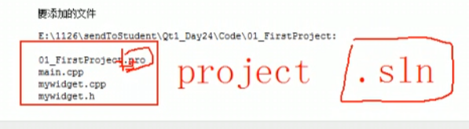
可以看到，有一个.pro文件，跟VS文件是一样的，他是一个工程文件！
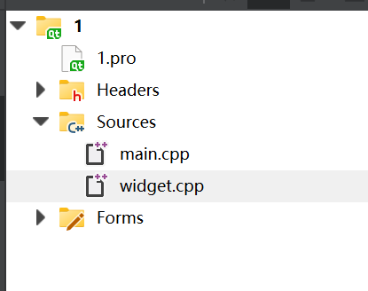
这是一个工程的目录
先看主要的显示文件：
#include "widget.h"
#include <QApplication> // 包含一个应用程序类的文件
//argc 命令行变量的数量， *argv[] 是命令行变量的数组
int main(int argc, char *argv[])
{
//应用程序对象，再QT中方，应用程序对像只有一个
QApplication a(argc, argv);
//窗口对象， widget- 父类 -> QWedget
Widget w;
// 显示窗口
w.show();
// 让应用程序对象进入消息循环
return a.exec();
} 这个循环可以被类比成如下的C程序：
#include<conio.h>
int main()
{
while(_get() == ' ');
} 这里，是点击窗口’ X ‘来关闭！
看看工程文件
工程文件自身可以在QT里打开：
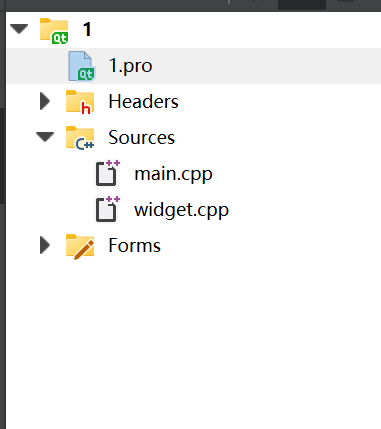
点击 1.pro 文件，可以看到如下的内容
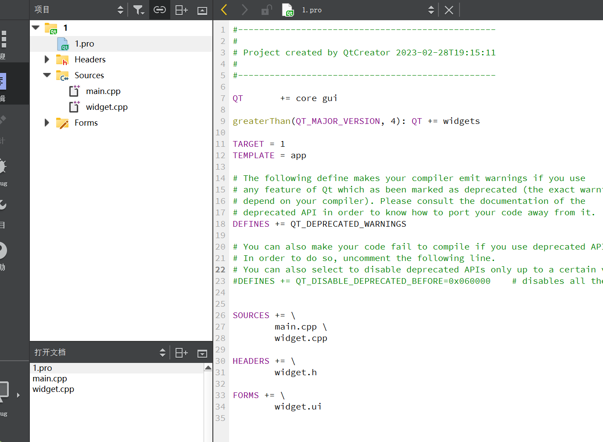
#-------------------------------------------------
# //工程创建时间
# Project created by QtCreator 2023-02-28T19:15:11
#
#-------------------------------------------------
QT += core gui // 包含的模块（1）
greaterThan(QT_MAJOR_VERSION, 4): QT += widgets // 大于这个版本才添加模块
TARGET = 1 // 目标 生成的.exe文件的名字（2）不满意名字可以自行更换
TEMPLATE = app //模板
# The following define makes your compiler emit warnings if you use
# any feature of Qt which as been marked as deprecated (the exact warnings
# depend on your compiler). Please consult the documentation of the
# deprecated API in order to know how to port your code away from it.
DEFINES += QT_DEPRECATED_WARNINGS
# You can also make your code fail to compile if you use deprecated APIs.
# In order to do so, uncomment the following line.
# You can also select to disable deprecated APIs only up to a certain version of Qt.
#DEFINES += QT_DISABLE_DEPRECATED_BEFORE=0x060000 # disables all the APIs deprecated before Qt 6.0.0
SOURCES += \
main.cpp \ //源文件
widget.cpp
HEADERS += \
widget.h // 头文件
FORMS += \
widget.ui（1）：
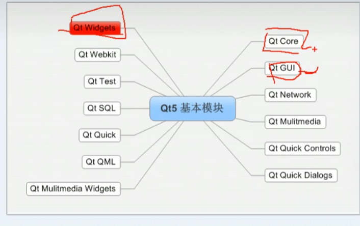
（2）那个exe文件在这里：打开你的工程目录，返回上级会发现：
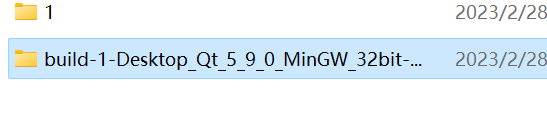
点击下面的文件夹
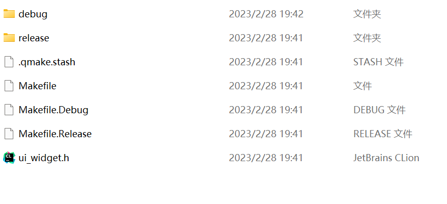
点击 debug
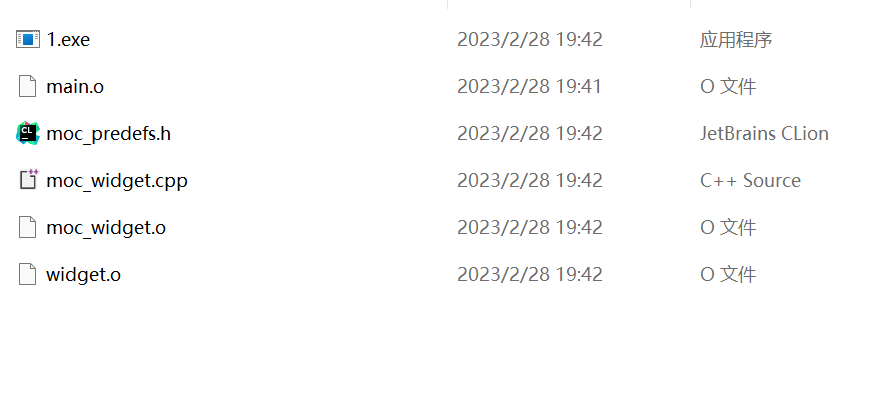
就在这里的 1.exe
看看头文件和widget.cpp
#ifndef WIDGET_H
#define WIDGET_H
#include <QWidget>
namespace Ui {
class Widget;
}
class Widget : public QWidget
{
Q_OBJECT // 允许类中使用信号和槽的宏，不要轻易改动
public:
explicit Widget(QWidget *parent = 0);// 默认构造函数
~Widget();
private:
Ui::Widget *ui;
};
#endif // WIDGET_H
#include "widget.h"
#include "ui_widget.h"
Widget::Widget(QWidget *parent) :
QWidget(parent),
ui(new Ui::Widget)
{
ui->setupUi(this);
}
Widget::~Widget()
{
delete ui;
}
命名规范
类名：首字母大写，单词与单词之间首字母大写
函数名，变量名称：首字母小写，但单词与单词之间首字母大写
快捷键一览：
注释：ctrl + /
运行：ctrl + r
编译：ctrl + b
查找：ctrl + f
整行移动：ctrl + shift + ↑ 或者 ↓
自动对齐：ctrl + i
同名的.cpp 和 .h: F4
创建一个按钮
我们查询帮助文档，得到这些信息
QPushButton Class
The QPushButton widget provides a command button. More...
Header:
#include <QPushButton>
qmake:
QT += widgets
Inherits:
QAbstractButton
Inherited By:
QCommandLinkButton 当然要留意是什么模块，如果 pro 文件里没有，那需要我们手动添加，在
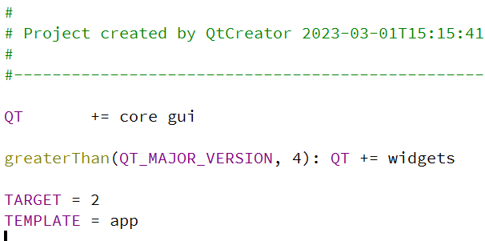
的QT += 处 添加模块。
当然可以看看函数的功能
QPushButton(QWidget *parent = Q_NULLPTR)
QPushButton(const QString &text, QWidget *parent = Q_NULLPTR)
QPushButton(const QIcon &icon, const QString &text, QWidget *parent = Q_NULLPTR)
~QPushButton()
bool
autoDefault() const
bool
isDefault() const
bool
isFlat() const
QMenu *
menu() const
void
setAutoDefault(bool)
void
setDefault(bool)
void
setFlat(bool)
void
setMenu(QMenu *menu) 于是可以在 widget.cpp 中书写如下代码：
#include "widget.h"
#include<QPushButton>
Widget::Widget(QWidget *parent)
: QWidget(parent)
{
QPushButton* btn = new QPushButton;
btn->setParent(this); // 需要设置窗口对象作为对象书的叶子节点
btn->setText("hello world");
}
Widget::~Widget()
{
}
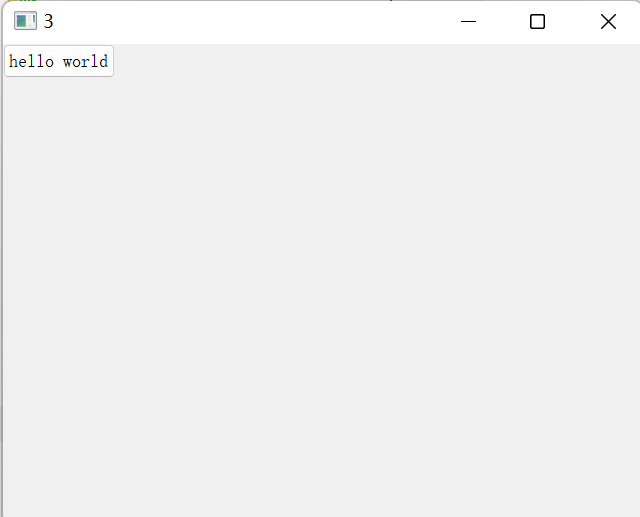
如果我们重新设置一下窗口大小，那就
resize(int Height,int Width); 但是如果我们直接创建第二个按钮，那就会覆盖第一个，那怎么办？使用 move 方法！
btn->move(int x_pos,int y_pos) 当然啊，我们可以设置窗口的名字：
setWindowTitle("My first windows") 以及可以固定窗口大小：
setFixedSize(int Height,int Width)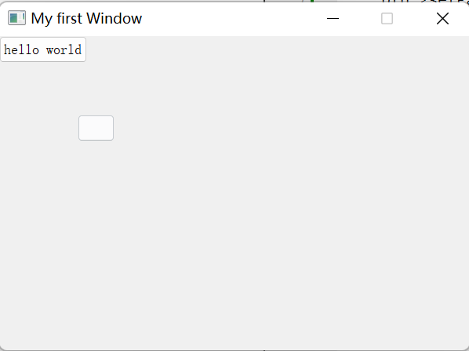
#include "widget.h"
#include<QPushButton>
Widget::Widget(QWidget *parent)
: QWidget(parent)
{
QPushButton* btn = new QPushButton;
btn->setParent(this); // 需要设置窗口对象作为对象书的叶子节点
btn->setText("hello world");
QPushButton* btn2 = new QPushButton;
btn2->setParent(this); // 需要设置窗口对象作为对象书的叶子节点
btn2->move(100,100);
setWindowTitle("My first Window");
resize(600,400);
setFixedSize(600,400);
}
Widget::~Widget()
{
}
QT对象树
我们发现，程序结束后，不需要一个一个手动的释放对象，这是因为，我们调用构造函数指定了一个Parent父对象，其父对象会把我们自己搞的子对象挂到对象树上，
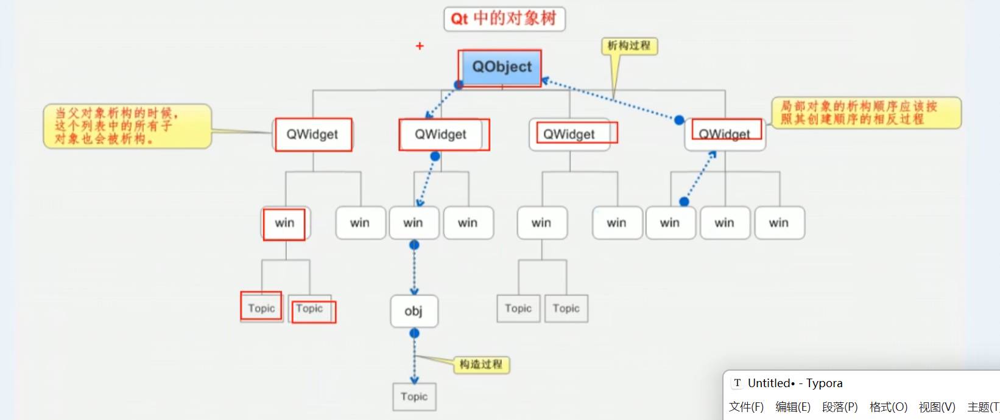
（补充：一个类创建时需要调用一个函数来构造初始化这个类，这叫构造函数。当类的什么周期结束时需要调用一个删除函数，释放类占用的空间，这叫析构函数。类默认有这两个函数）于是在QT中只要指定好父对象就会帮助管理！不需要我们手动释放，很是方便
现在，我们来创建一个新类：MyPushBtn
右键工程-> 添加新文件->C++ Class ->选择 QWedget就好了。
随后，就发现多了一些文件
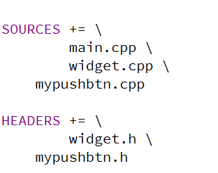
pro文件下多了我们自己定义的类的cpp文件和头文件
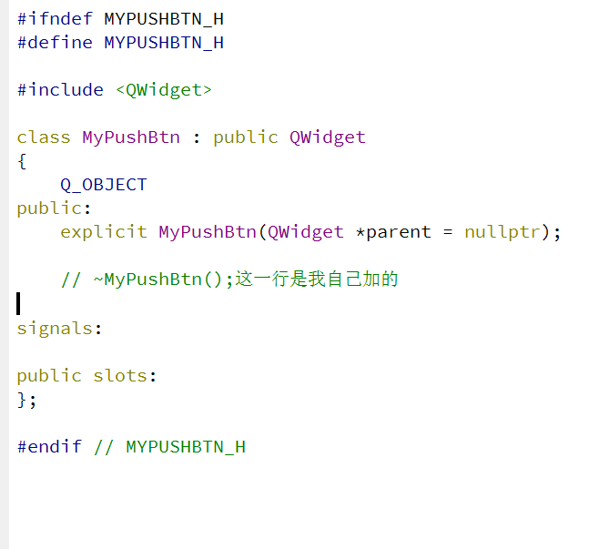
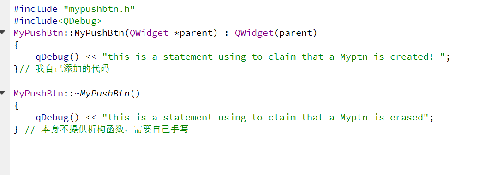
现在我们调一下自己写的：
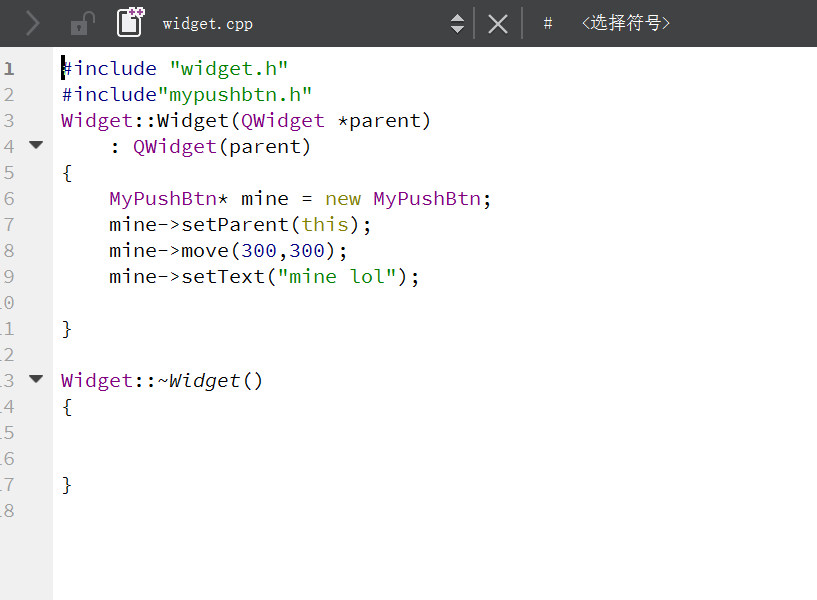
可以看到我们自己的按钮产生了！
QT 坐标系
QT的坐标原点在窗口的最左上角，这是值得注意的一点，同时：X向右增大，向左减小，而Y 向下增大，向上减小。对于嵌套窗口，则是以父窗口为例子的！
信号与槽的基础概念
我们现在开始关联我们的行为和效果！比若说：我希望点击按钮后就帮我关闭窗口！于是
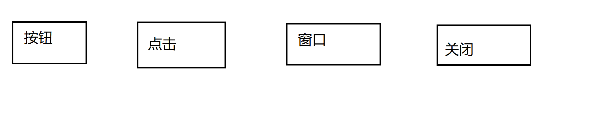
这就是我们分解完后发现就是这样的，现在开始关联他们：
英语里：connect就是连接的，结合上图发现，想要表达一个链接，无非就是：
connect(sender, sendSignal, receiver, slogAsActionReact) 注意了：注意！我们点击按钮，不一定是去关闭窗口，而窗口关闭了不一定时我点击了按钮导致的
于是，信号槽的优点就是：松散耦合的！他们之间本来没啥关联！但是现在我们直接用connect函数来耦合在一起！
QT里，就是connect函数完成我们的工作！先来看发送者：按钮！那信号呢？
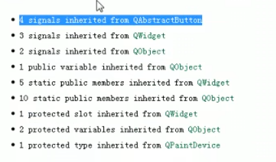
于是找到一个信号clicked.
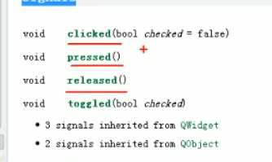
所以传入一个函数的地址！&QPushButton::clicked
接收者同理！：
connect(mine, &QPushButton::clicked,this,&QWidget::close); 这一思想十分重要！还是需要好好消化！
现在尝试自己来书写两个类，来建立相应的关系！
现在构建程序如下：
在最大工程文件之下添加两个类！，首先是 Teacher类。 随后是学生类。假设这一场景！老师要求学生交作业！学生听到老师的要求来拿出作业，老师看到学生拿出作业之后再上前收取。这个行为我们使用 QT 的槽与信号来完成我们的实现。
选择新建两个类： Student 和 Teacher. 注意到为了能够使用 QT系统的一些性质，有必要来选择继承QT类。
当我们完成了新建，马上就发现，它同我们所想象的不太一样！
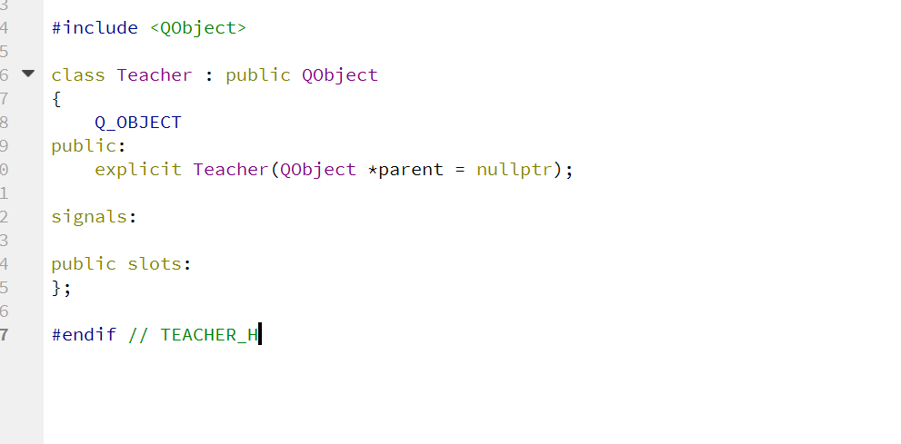
#ifndef TEACHER_H
#define TEACHER_H
#include <QObject>
class Teacher : public QObject // QObject 是 Teacher 的一个基类
{
Q_OBJECT // 这是QObject宏，声明启用Slot - Signals关系的
public:
explicit Teacher(QObject *parent = nullptr);
// 只有在有 Q_OBJECT下才生效
signals:
// 我们在这里书写 signals 作为信号函数
public slots:
// 我们在这里书写 slots 作为响应信号的槽函数
};
#endif // TEACHER_H 注意到我们在这里完成槽函数和信号函数的书写！
以及这里需要提醒的是：槽函数在这里是一个实现的占位函数，这是在底层的文件中，QT为我们实现了函数了，不要在定义实现文件里再次定义信号函数，否则会发生报错。
但是，槽函数需要实现，这是需要在实现文件里自己重写的！
void student::reactions(){
qDebug() << "Yep, I think I will help you!";
} 书写完响应之后，我们现在可以来干活了（在Widget.cpp）
#include "widget.h"
#include"student.h"
#include"teacher.h"
Widget::Widget(QWidget *parent)
: QWidget(parent)
{
Teacher* t = new Teacher(this);
student* s = new student(this);
// 这里是链接信号和槽，但是这又这样是不行的，英文不是所有的这个函数都是信号，只有当我们认为指定他是信号的时候才需要出发槽函数
connect(t,&Teacher::announceHungry,s,&s->reactions);
// 而emit就是声命这是这是一个信号函数且需要调用s->reactions
emit t->announceHungry();
}
Widget::~Widget()
{
}
这样，只要我们一开始运行程序，就会发现
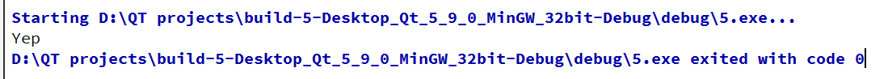
嗯，打印了（如果跑的是我的那个demo就是Yep, I think I will help you!）
槽函数的重载版本
下面，我们进一步的探索可以重载版本的槽函数
以上一小节的场景为例子，加上槽函数的重载版本！
// in .h
slots:
void reactions(QString s);
// .cpp
void student::reactions(QSrting s){
qDebug() << "yep, I think it is" << s;
} 现在，注释掉原先的emit 就可以发现智能提示上函数有重载版本！
但是，当我们直接单击运行的时候，QT报错了！原因很简单！QT不知道你要那个回应！于是，我们转向传专门到具体的函数的指针！也就是直接传重载版本的函数指针！
但是，我们的信号来源信息是需要从信号函数那里来的，于是还要重载Signal函数
//.h
signal:
void announceHungry(QString s);
// .cpp
void Teacher::announceHungry(QString s);// 仍然不实现！ 现在，告诉引发的信号是来自：
emit t->announceHungry("111"); // 从这里编译器判断函数类型void (Teacher::*StringOne)(QString) = &Teacher::announceHungry;
void (student::*reacOne)(QString) = &student::reactions;
connect(t,StringOne,s,reacOne);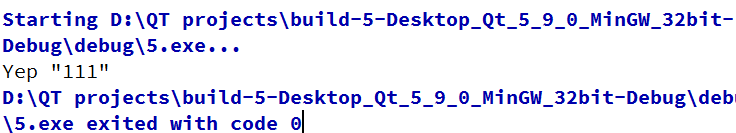
令人恼火的是：
马上强迫症发现了：不对啊，我们的111不应该打印“” 啊！，这是因为类型是QString导致的，这个时候只要我们进行转化就好了
qDebug() << s.toUtf8().data()
// QString -> ByteArray -> const char*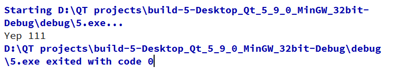
高级一点的信号与槽
现在，让我们点击按钮，连续的触发事件来让样例复杂起来。
信号与槽的一个重要的要求就是信号和槽的函数的参数必须一致(有参的信号和QPushButton的clicked信号的参数不匹配就会编译报错)，于是，包装一个Emit函数
void Widget::Emit()
{
// 预先在Widget里添加成员t，并且初始化
Emit t->announcement("111")
} 现在，开始关联：
QPushButton* btn = new QPushButton("Press me",this);
btn->move(200,200);
connect(btn,QPushButton::clicked,this,&Widget::Emit);
void (Teacher::*StringOne)(QString) = &Teacher::announceHungry;
void (student::*reacOne)(QString) = &student::reactions;
connect(t,StringOne,s,reacOne);
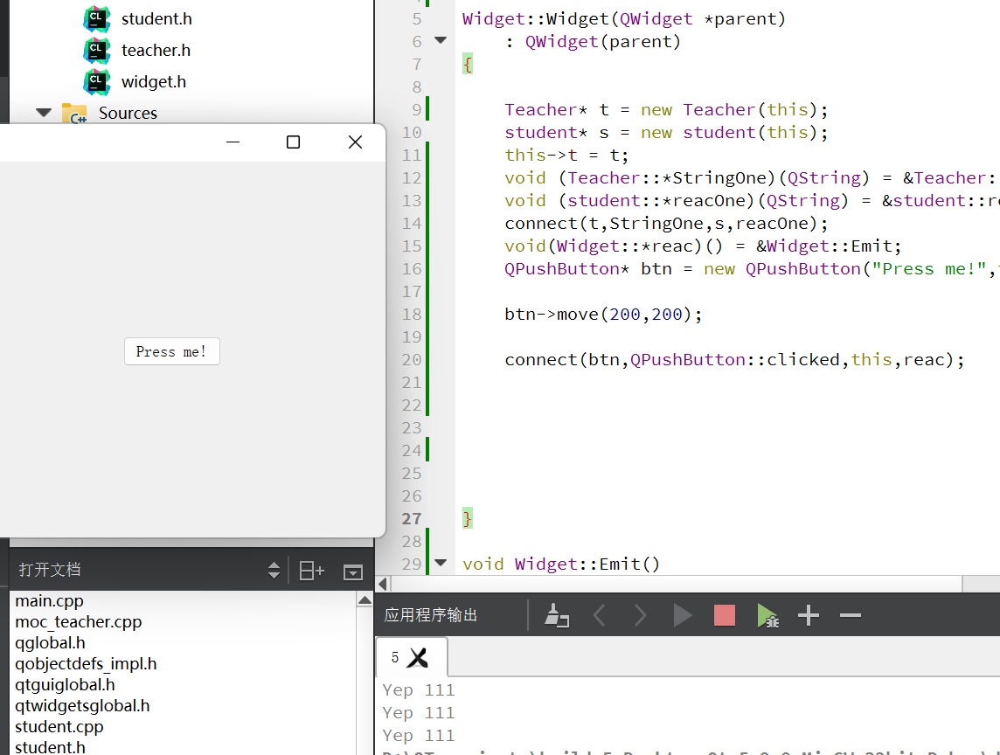
对了，信号也可以来连接信号，就是：
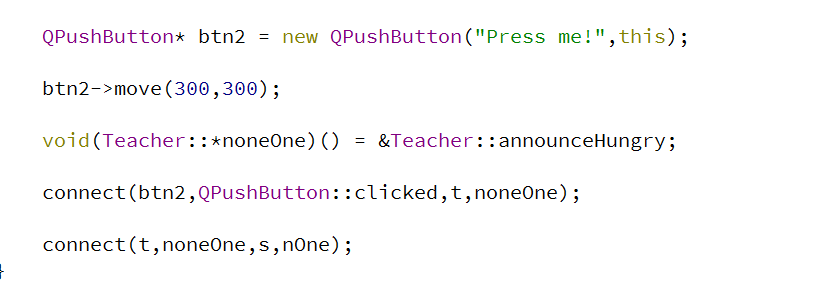
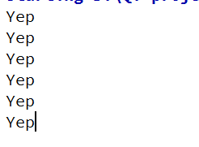
断开链接
disconnect(s1,signalF,sloter,slotF);复习一下：
1）信号可以链接信号
2）一个信号可以链接多个槽函数
3）多个信号可以链接同一个槽函数
4）但是信号与槽函数的参数必须一一对应
这是我们练习生活实际是不难发现的！关于四，仔细看看！
void (Teacher::*StringOne)(QString) = &Teacher::announceHungry;
void (student::*reacOne)(QString) = &student::reactions 可以看到必须一 一对应！
5）信号的参数个数是可以多于槽的参数，也就是说，信号携带的信息必须多余槽需要的！
void(A::*sig)(QString,int) = &A::singals;
void(B::*slot)(QString,int) = &B::slots;(√)
void(A::*sig)(QString,int) = &A::singals;
void(B::*slot)(int，QString) = &B::slots;(×)
必须一一对应 而在QT4之前，我们使用SIGNAL,SLOT宏链接的。
connect(sig1,SIGNAL(signals()),slot1,SLOT(slot()))补充Lambda表达式
这是C++11的产物，我们由此创建一个匿名的函数以简化编程工作：
[capture](parameters)mutable->return-type{
statements
} 人话：[函数对象参数]（操作符重载函数参数）mutable->返回值{函数体实现}
1.函数对象参数
[ ]，这标志Lambda表达式的开始，不允许省略！其中，空表示没有使用任何函数对象。
[=] : 函数体内可以使用Lambda所在作用范围下的所有可见的局部变量（包括Lambda表达式所在的类的 this），并且传递方式是值传递
[&]： 函数体内可以使用Lambda所在作用范围下的所有可见的局部变量（包括Lambda表达式所在的类的 this），并且传递方式是引用传递。
这是一个修改的demo.
[=](){
btn2->setText("Lol");
}(); 最后的（）表示的是当地声明马上调用
[this] :函数体内可以使用Lambda所在作用范围下的所有可见的局部变量（包括Lambda表达式所在的类的 this和内部成员的变量），并且传递方式是值传递
[varName] 只认识varName，其他都看不见到，用于仅操作一个变量的匿名表达式
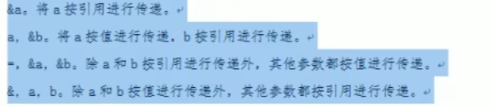
当然后面的很少使用！
mutable关键字：可以修改按值传递进来的拷贝
可以观察这个代码
QPushButton* btn2 = new QPushButton("this is a btn2",this);
int n = 10;
connect(btn2,&QPushButton::clicked,this,[n]()mutable{n=110,qDebug()<<n;});
QPushButton* btn3 = new QPushButton("this is a btn3",this);
btn3->move(100,100);
connect(btn3,QPushButton::clicked,this,[=]()mutable{qDebug()<<n;}); 你会发现，点击btn2之后又点击btn3，发现并没有修改n，说明确实只是更改了拷贝而已！
下面来用一下，复盘一下我们学习的知识，那就是设计一个按钮，位于图片中学附近，且点击之后可以使传入的一个值+=10，同时打印信息：From lambda’s reactions!
#include "widget.h"
Widget::Widget(QWidget *parent)
: QWidget(parent)
{
QPushButton* btn = new QPushButton("this is a btn",this);
resize(640,480);
btn->move(320,240);
connect(btn,&QPushButton::clicked,this,[](){qDebug()<<"From lambda's reactions!";});
unsigned int m = 10;
connect(btn,&QPushButton::clicked,this,[m]()mutable{m+=10;qDebug()<<m;});
}
Widget::~Widget()
{
} 返回值：就是在（）后写 -> type随后写实现！
[]()->int{return 1000} 如
int in = 10;
int res = [=]()->int{return in*in;}();
qDebug() << res; 又如点击按钮关闭窗口的demo:
QPushButton* btn = new QPushButton("this is a btn",this);
resize(640,480);
btn->move(320,240);
connect(btn,&QPushButton::clicked,this,&Widget::close); 好吧，那又加一个打印log?转向Lambda就好了
QPushButton* btn = new QPushButton("this is a btn",this);
resize(640,480);
btn->move(320,240);
connect(btn,&QPushButton::clicked,this,[this](){this->close();qDebug()<<"Windows is closed!";});QMainWindow
QMainWindow是一个为用户提供主窗口程序的类，它包含一个菜单栏，多个工具栏，多个铆接部件，一个状态栏和一个中心部件，是多个应用程序的基础，如文本编辑器，图片编辑器等等
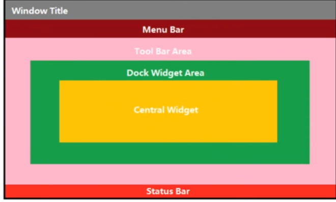
现在我们尝试创建一个QMainWindow，并运行之：
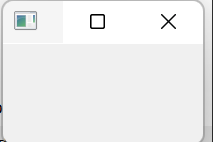
好小！调整一下，在MainWindow里头resize一下完事！
#include "mainwindow.h"
MainWindow::MainWindow(QWidget *parent)
: QMainWindow(parent)
{
resize(640,480);
}
MainWindow::~MainWindow()
{
}
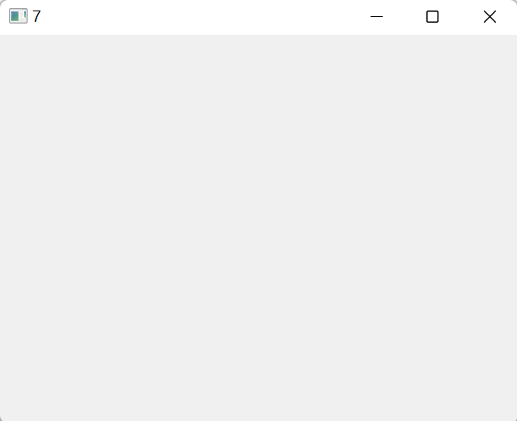
下面创建一个菜单栏，他是QMenuBar类的
QMenuBar* bar = menuBar();
// 设置当前窗口的菜单栏
setMenuBar(bar);
// 设定名称
// 事实上不是这样用的，但是为了展示效果如此
bar->addMenu("文件");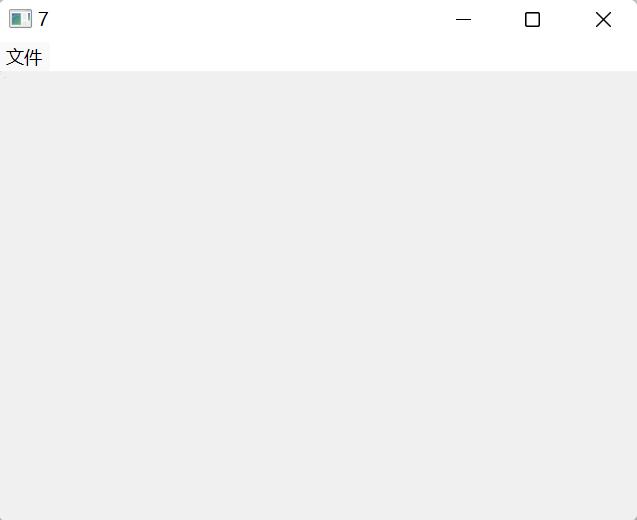
好吧，事实上是我们是使用一个菜单对象来接受之：
QMenu* fileMenu = bar->addMenu("文件"); 我们这样做是为了后续的其他操作！比如说，现在我们想点击它让他下拉一个菜单来，那就
fileMenu->addAction("新建");
//添加一个分割符
fileMenu->addSeparator();
fileMenu->addAction("打开");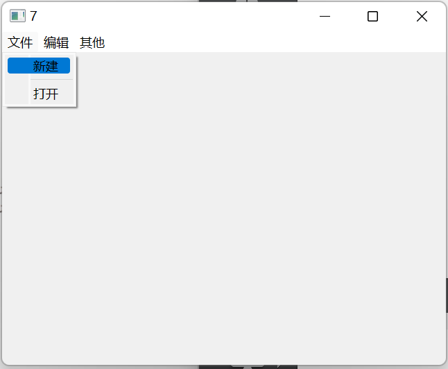
工具栏
//工具栏
QToolBar* toolBar = new QToolBar(this);
addToolBar(toolBar); 这个流程为我们的窗口添加了一个工具栏
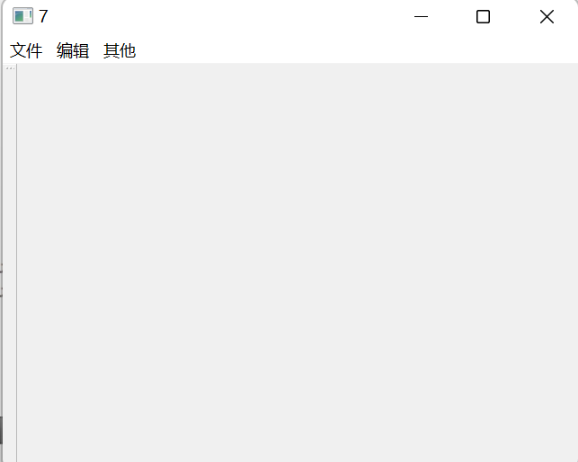
看到有变化！是的就是我们的工具栏。
工具栏是允许有多个的！我们再仔细瞧瞧其他的add重载函数！
这个引起了我们的注意
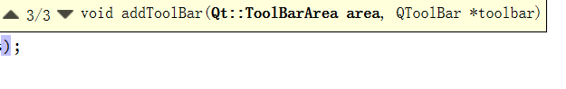
这个函数究竟实现了啥功能呢？把这个函数扔进QT 帮助手册里
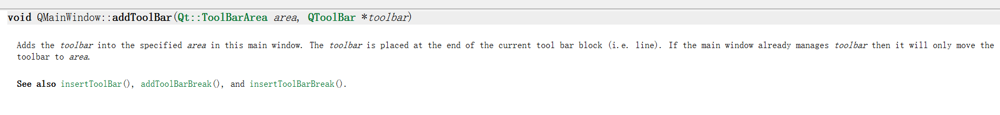
这个地方，点击第一个参数的类去
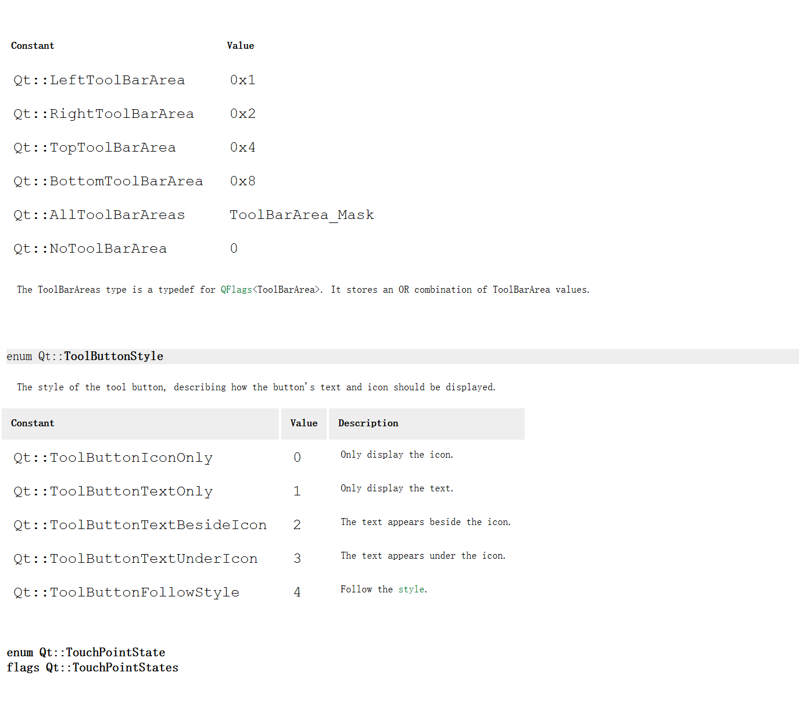
很明显了！就是再说这个工具栏初始时停靠在哪里！
addToolBar(Qt::LeftToolBarArea,toolBar);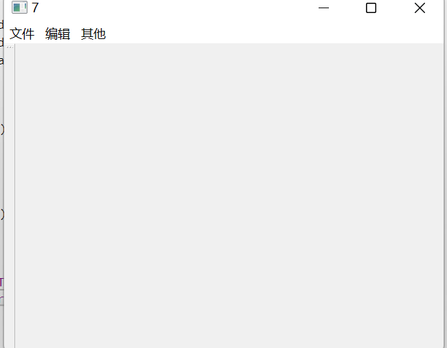
这是设计默认区域。总结一下
#include "mainwindow.h"
#include<QMenuBar>
#include<QToolBar>
#include<QDebug>
MainWindow::MainWindow(QWidget *parent)
: QMainWindow(parent)
{
//重置窗口大小
resize(640,480);
//创建菜单栏，最多只能有一个
QMenuBar* bar= menuBar();
//设置显示窗口为当前窗口
setMenuBar(bar);
//菜单
QMenu* fileMenu = bar->addMenu("文件");
QMenu* editMenu = bar->addMenu("编辑");
//添加菜单项
fileMenu->addAction("新建");
//添加分隔符
fileMenu->addSeparator();
fileMenu->addAction("打开");
//添加工具栏
QToolBar* toolBar = new QToolBar(this);
addToolBar(Qt::LeftToolBarArea,toolBar);
}
MainWindow::~MainWindow()
{
} 下面说说它只允许停靠在一个方向。我们可以查看QToolBar的成员函数：
// constructor
QToolBar(const QString &title, QWidget *parent = Q_NULLPTR)
QToolBar(QWidget *parent = Q_NULLPTR)
// destructor
~QToolBar()
QAction *
actionAt(const QPoint &p) const
QAction *
actionAt(int x, int y) const
QAction *
addAction(const QString &text)
QAction *
addAction(const QIcon &icon, const QString &text)
QAction *
addAction(const QString &text, const QObject *receiver, const char *member)
QAction *
addAction(const QIcon &icon, const QString &text, const QObject *receiver, const char *member)
QAction *
addAction(const QString &text, const QObject *receiver, PointerToMemberFunction method)
QAction *
addAction(const QString &text, Functor functor)
QAction *
addAction(const QString &text, const QObject *context, Functor functor)
QAction *
addAction(const QIcon &icon, const QString &text, const QObject *receiver, PointerToMemberFunction method)
QAction *
addAction(const QIcon &icon, const QString &text, Functor functor)
QAction *
addAction(const QIcon &icon, const QString &text, const QObject *context, Functor functor)
QAction *
addSeparator()
QAction *
addWidget(QWidget *widget)
Qt::ToolBarAreas
allowedAreas() const
void
clear()
QSize
iconSize() const
QAction *
insertSeparator(QAction *before)
QAction *
insertWidget(QAction *before, QWidget *widget)
bool
isAreaAllowed(Qt::ToolBarArea area) const
bool
isFloatable() const
bool
isFloating() const
bool
isMovable() const
Qt::Orientation
orientation() const
void
setAllowedAreas(Qt::ToolBarAreas areas)
void
setFloatable(bool floatable)
void
setMovable(bool movable)
void
setOrientation(Qt::Orientation orientation)
QAction *
toggleViewAction() const
Qt::ToolButtonStyle
toolButtonStyle() const
QWidget *
widgetForAction(QAction *action) const 看到
bool
isAreaAllowed(Qt::ToolBarArea area) const 不正是表明停靠范围！
toolBar->setAllowedAreas(Qt::RightToolBarArea|Qt::LeftToolBarArea); 以及设置是否可以浮动：
toolBar->setFloatable(false); 甚至可以设置是否可以移动！
toolBar->setMovable(false); 下面设置内容：
toolBar->addAction("这是action 1");
toolBar->addAction("这是action2");
//使用这个方法表明的是跟菜单栏是公用同一个功能的！
//需要接受返回值
//QAction* newAct = fileMenu->addAction("新建");
toolBar->addAction(openAct);
//其他类似
toolBar->addAction(newAct); 工具栏也可以添加分割线：
toolBar->addSeparator(); 还可以添加控件！！！
QPushButton* btn = new QPushButton("a btn for the toolBar",this);
toolBar->addWidget(btn);状态栏
最多也只能有一个
QStatusBar* stbar = statusBar();
setStatusBar(stbar);
QLabel* lab = new QLabel("a mentions",this);
// QLable是Widget控件
stbar->addWidget(lab);// 左侧
QLabel* lab2 = new QLabel("2 mentions",this);
stbar->addPermanentWidget(lab2);//右侧 也可以添加铆接部件，可以有多个
//铆接部件（可以一大堆）
QDockWidget* dock = new QDockWidget(this);
addDockWidget(Qt::BottomDockWidgetArea,dock);
//设置中心部件.可以别让浮动窗口占据窗口
QTextEdit* edit = new QTextEdit(this);
setCentralWidget(edit);
dock->setAllowedAreas(Qt::TopDockWidgetArea); 对于全局者，都是set,只能有一个，反之可以多个（add_）
回顾一下：
#include "mainwindow.h"
#include<QMenuBar>
#include<QToolBar>
#include<QDebug>
#include<QPushButton>
#include<QStatusBar>
#include<QLabel>
#include<QDockWidget>
#include<QTextEdit>
MainWindow::MainWindow(QWidget *parent)
: QMainWindow(parent)
{
//重置窗口大小
resize(1640,880);
//创建菜单栏，最多只能有一个
QMenuBar* bar= menuBar();
//设置显示窗口为当前窗口
setMenuBar(bar);
//菜单
QMenu* fileMenu = bar->addMenu("文件");
QMenu* editMenu = bar->addMenu("编辑");
//添加菜单项
QAction* newAct= fileMenu->addAction("新建");
//添加分隔符
fileMenu->addSeparator();
QAction* openAct= fileMenu->addAction("打开");
//添加工具栏
QToolBar* toolBar = new QToolBar(this);
addToolBar(Qt::LeftToolBarArea,toolBar);
//设置允许停靠区域
toolBar->setAllowedAreas(Qt::RightToolBarArea|Qt::LeftToolBarArea);
//设置行为
toolBar->addAction("这是action 1");
toolBar->addAction("这是action2");
toolBar->addAction(openAct);
toolBar->addSeparator();
toolBar->addAction(newAct);
//放置控件
QPushButton* btn = new QPushButton("a btn for the toolBar",this);
toolBar->addWidget(btn);
//状态栏
QStatusBar* stbar = statusBar();
setStatusBar(stbar);
//加点东西
QLabel* lab = new QLabel("a mentions",this);
// QLable是Widget控件
stbar->addWidget(lab);
QLabel* lab2 = new QLabel("2 mentions",this);
stbar->addPermanentWidget(lab2);
//铆接部件（可以一大堆）
QDockWidget* dock = new QDockWidget(this);
addDockWidget(Qt::BottomDockWidgetArea,dock);
//设置中心部件.可以别让浮动窗口占据窗口
QTextEdit* edit = new QTextEdit(this);
setCentralWidget(edit);
dock->setAllowedAreas(Qt::TopDockWidgetArea);
}
MainWindow::~MainWindow()
{
}
添加资源文件
我们现在打开UI设计一栏，现在可以直接开始先设计后构建代码逻辑了
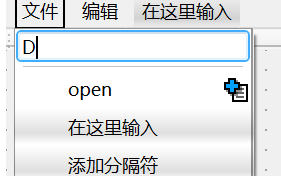
菜单项必须必须输入英文，这是因为跟变量命名有关，可以后续改动text 值来改变显示
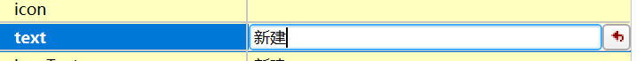
其他就不多阐述了，类似的。
如何使用代码访问ui呢？会带mainwindow.cpp
MainWindow::MainWindow(QWidget *parent) :
QMainWindow(parent),
ui(new Ui::MainWindow)
{
ui->setupUi(this); // 类似于这样的！
} 添加一个图标吧：
ui->actionnew->setIcon(QIcon("D:/QT projects/9/source/1.png")); 首先先把资源放到项目目录路径下，不然肯定找不到！
如何快速的在项目中添加文件呢？先去右键项目：添加性文件，选择QT下的Qt resource files
然后，添加：会发现要求你写一个前缀，这是为了分类资源文件。可以偷懒直接写一个\
在项目中引用只需要按照格式：
: + prefix + fileName 也即是: + 前缀加上文件名即可
ui->actionnew->setIcon(QIcon(":/source/1.png"));对话框
可是我们的点击事件还是没有任何反应。下面使用信号与槽让他动起来
#include "mainwindow.h"
#include "ui_mainwindow.h"
#include<QDialog>
#include<QDebug>
MainWindow::MainWindow(QWidget *parent) :
QMainWindow(parent),
ui(new Ui::MainWindow)
{
ui->setupUi(this);
// 点击新建按钮来弹出对话框
connect(ui->actionnew,&QAction::triggered,[this](){
// 对话框 分类
// 模态对话框（不可以对其他窗口做操做） 和 非模态对话框（可以对其他窗口做操做）
QDialog dlg(this); //创建一个
dlg.exec();
qDebug() << "A dialog ejected\n!";
});
}
MainWindow::~MainWindow()
{
delete ui;
}
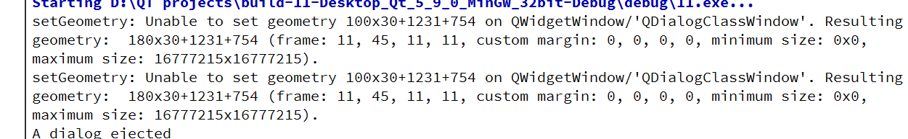
出现这样的警告，说明是对话框太小了，需要调整
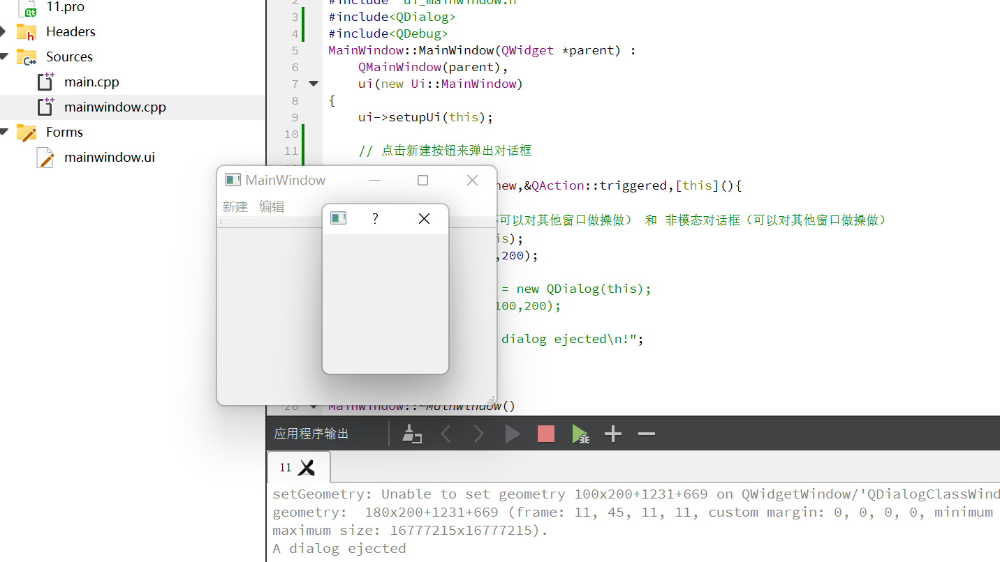
#include "mainwindow.h"
#include "ui_mainwindow.h"
#include<QDialog>
#include<QDebug>
MainWindow::MainWindow(QWidget *parent) :
QMainWindow(parent),
ui(new Ui::MainWindow)
{
ui->setupUi(this);
// 点击新建按钮来弹出对话框
connect(ui->actionnew,&QAction::triggered,[this](){
// 对话框 分类
// 模态对话框（不可以对其他窗口做操做） 和 非模态对话框（可以对其他窗口做操做）
QDialog dlg(this);
dlg.resize(100,200);
dlg.exec();
qDebug() << "A dialog ejected\n!";
});
}
MainWindow::~MainWindow()
{
delete ui;
}
那我们现在来看一个非模糊的：
#include "mainwindow.h"
#include "ui_mainwindow.h"
#include<QDialog>
#include<QDebug>
MainWindow::MainWindow(QWidget *parent) :
QMainWindow(parent),
ui(new Ui::MainWindow)
{
ui->setupUi(this);
// 点击新建按钮来弹出对话框
connect(ui->actionnew,&QAction::triggered,[this](){
// 对话框 分类
// 模态对话框（不可以对其他窗口做操做） 和 非模态对话框（可以对其他窗口做操做）
// QDialog dlg(this);
// dlg.resize(100,200);
// dlg.exec();
QDialog* dig = new QDialog(this); // 不可以开栈上，对象一show完就没了！
dig->resize(100,200);
dig->show();
qDebug() << "A dialog ejected\n!";
});
}
MainWindow::~MainWindow()
{
delete ui;
}
为了防止用户一直点，一直创建对话框，我们可以设置关闭就删掉的属性
dig->setAttribute(Qt::WA_DeleteOnClose);消息对话框
消息对话框
系统自己提供了大量的对话框，如：
QColorDialog 选择颜色
QFileDialog 选择文件或者目录
QFontDialog 选择字体
QInputDialog 允许用户输入一个值
QMessageDialog 模态对话框
QPageSetUpDialog 为打印机提供相关选项
QPrintDialog 打印机配置
QPrintPreviewDialog 打印预览
QProcessDialog 显示操作过程
我们现在着重看看消息框是啥情况！在帮助文档下搜索QMessageBox
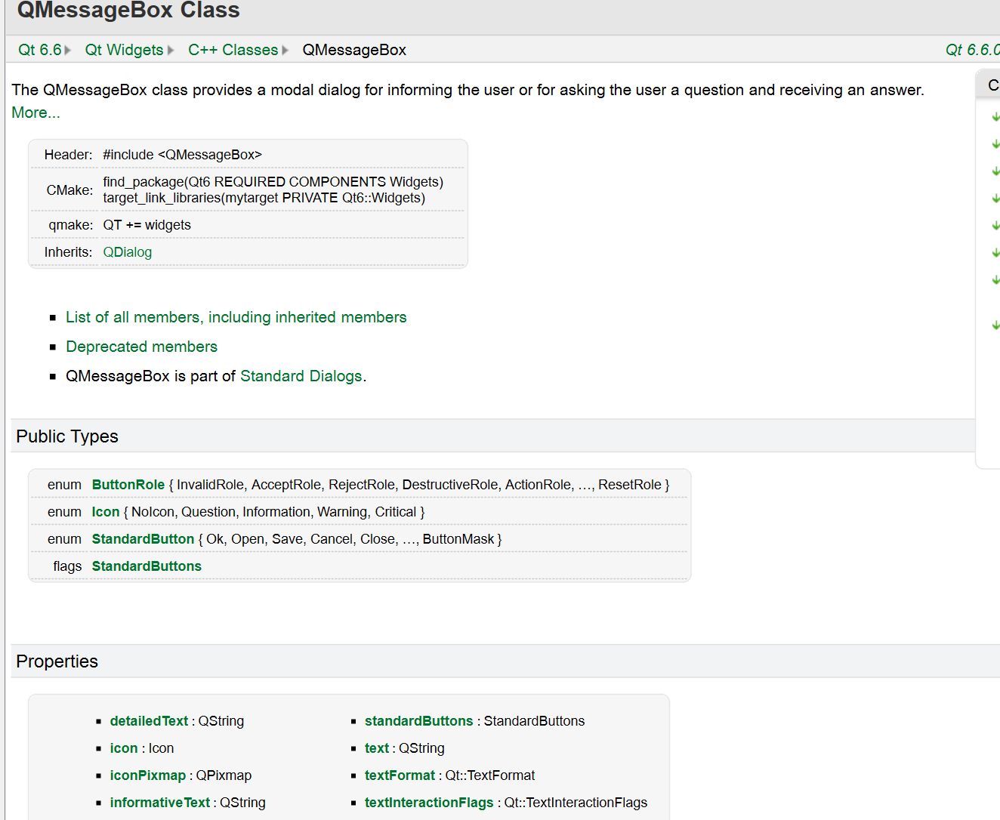
下面显示之。
#include "QtWidgetsApplication1.h"
#include<qmessagebox.h>
QtWidgetsApplication1::QtWidgetsApplication1(QWidget *parent)
: QMainWindow(parent)
{
ui.setupUi(this);
QMessageBox::critical(this, "critical", "666");
}
QtWidgetsApplication1::~QtWidgetsApplication1()
{
}
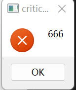
#include "QtWidgetsApplication1.h"
#include<qmessagebox.h>
QtWidgetsApplication1::QtWidgetsApplication1(QWidget *parent)
: QMainWindow(parent)
{
ui.setupUi(this);
QMessageBox::information(this, "information", "666");
}
QtWidgetsApplication1::~QtWidgetsApplication1()
{
}C++
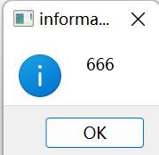
#include "QtWidgetsApplication1.h"
#include<qmessagebox.h>
QtWidgetsApplication1::QtWidgetsApplication1(QWidget *parent)
: QMainWindow(parent)
{
ui.setupUi(this);
QMessageBox::question(this, "question", "666");
}
QtWidgetsApplication1::~QtWidgetsApplication1()
{
}
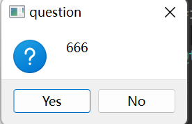
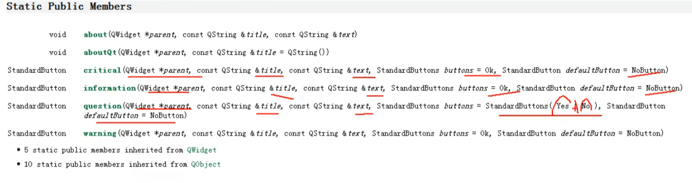
于是可以更改参数就好了。
QMessageBox::question(this, "question", "666",QMessageBox::Save|QMessageBox::Cancel);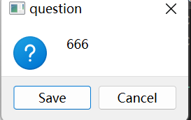
这个函数参数是这样的：
参数1：父类
参数2：标题
参数3：提示内容
参数4：按键类型
参数5：默认回车关联的按键
返回参数：用户选择
如：
#include "QtWidgetsApplication1.h"
#include<qmessagebox.h>
#include<tchar.h>
QtWidgetsApplication1::QtWidgetsApplication1(QWidget *parent)
: QMainWindow(parent)
{
setLocale(QLocale::AnyLanguage);
ui.setupUi(this);
if (QMessageBox::Save == QMessageBox::question(this, "question", "666", QMessageBox::Save | QMessageBox::Cancel)) {
qDebug() << "you clicked the save";
}
}
QtWidgetsApplication1::~QtWidgetsApplication1()
{
} 想看Debug信息去项目属性那里更改一下输出为控制台即可！
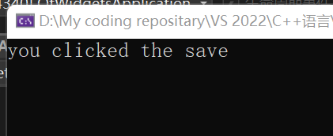
来看看其他demo:
#include "QtWidgetsApplication1.h"
#include<qmessagebox.h>
#include<qcolordialog.h>
#include<qcolor.h>
QtWidgetsApplication1::QtWidgetsApplication1(QWidget *parent)
: QMainWindow(parent)
{
setLocale(QLocale::AnyLanguage);
ui.setupUi(this);
QColor color = QColorDialog::getColor(QColor(255, 0, 0));
qDebug() << "r = " << color.red() << "g = " << color.green() << "h = " << color.blue() ;
}
QtWidgetsApplication1::~QtWidgetsApplication1()
{
}
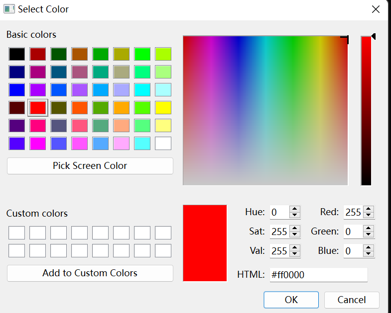
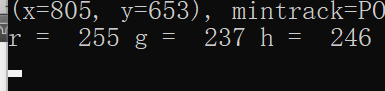
#include "QtWidgetsApplication1.h"
#include<qmessagebox.h>
#include<qcolordialog.h>
#include<qcolor.h>
#include<qfile.h>
#include<qfiledialog.h>
QtWidgetsApplication1::QtWidgetsApplication1(QWidget *parent)
: QMainWindow(parent)
{
setLocale(QLocale::AnyLanguage);
ui.setupUi(this);
/*QColor color = QColorDialog::getColor(QColor(255, 0, 0));
qDebug() << "r = " << color.red() << "g = " << color.green() << "h = " << color.blue() ;*/
}
QtWidgetsApplication1::~QtWidgetsApplication1()
{
QFileDialog::getOpenFileName(
this,// 设置父亲
"open the file", // caption
//目录
"D:\\"//文件夹
"(*.txt)"//过滤器，回忆Linux通配符就好了！
);
} 返回的是文件的路径！这个可以注意一下！
登录窗口界面布局介绍
现在使用Widget控件把一些模块分类装之，随后垂直布局，就是这样
QListWidget空间
是的！从这里拖一个QListWidget控件出来！
代码里如上图所示，运行：
也可以使用类似于list的容器放置一大堆内容：
#include "mainwindow.h"
#include "ui_mainwindow.h"
#include <QListWidgetItem>
MainWindow::MainWindow(QWidget *parent)
: QMainWindow(parent)
, ui(new Ui::MainWindow)
{
ui->setupUi(this);
QListWidgetItem* item = new QListWidgetItem("锄禾日当午");
ui->listWidget->addItem(item);
item->setTextAlignment(Qt::AlignHCenter);
// QStringList List<String>
QStringList list;
list << "锄禾日当午"<<"汗";
ui->listWidget->addItems(list);
}
MainWindow::~MainWindow()
{
delete ui;
}
QListWidget
下面的文段来自QT帮助助手！
Detailed Description
QListWidget is a convenience class that provides a list view similar to the one supplied by QListView, but with a classic item-based interface for adding and removing items. QListWidget uses an internal model to manage each QListWidgetItem in the list.
For a more flexible list view widget, use the QListView class with a standard model.
List widgets are constructed in the same way as other widgets:
QListWidget *listWidget = new QListWidget(this); The selectionMode() of a list widget determines how many of the items in the list can be selected at the same time, and whether complex selections of items can be created. This can be set with the setSelectionMode() function.
There are two ways to add items to the list: they can be constructed with the list widget as their parent widget, or they can be constructed with no parent widget and added to the list later. If a list widget already exists when the items are constructed, the first method is easier to use:
new QListWidgetItem(tr("Oak"), listWidget);
new QListWidgetItem(tr("Fir"), listWidget);
new QListWidgetItem(tr("Pine"), listWidget); If you need to insert a new item into the list at a particular position, then it should be constructed without a parent widget. The insertItem() function should then be used to place it within the list. The list widget will take ownership of the item.
QListWidgetItem *newItem = new QListWidgetItem;
newItem->setText(itemText);
listWidget->insertItem(row, newItem); For multiple items, insertItems() can be used instead. The number of items in the list is found with the count() function. To remove items from the list, use takeItem().
The current item in the list can be found with currentItem(), and changed with setCurrentItem(). The user can also change the current item by navigating with the keyboard or clicking on a different item. When the current item changes, the currentItemChanged() signal is emitted with the new current item and the item that was previously current.
大致就是创建一个长得像那样链表似的一个控件！
在QT 的 UI设计下，常常见这个控件于： List Widget下面。
我们这里不对对象名称做什么修改了！默认的情况下——
ui -> listWidget 找到它来！
为了添加控件，我们有两种方式来进行：
// 方式1
QListWidgetItem* item = new QListWidgetItem("卢本伟牛逼");
ui->listWidget->addItem(item);
item->setTextAlignment(Qt::AlignHCenter); 这就是一种方式——通过包装成 Item 送到Widget里去。
// 方式2
QStringList list;
list << "卢"<<"本"<<"伪"<<"牛"<<"逼";
ui->listWidget->addItems(list); 这是通过传入String List 链表的方式送数据。
1）添加条目的函数
void QListWidget::addItem(QListWidgetItem * item) 这个添加函数需要实现 new 一个 QListWidgetItem 条目对象，然后添加到列表控件末尾，下面小节会专门讲 QListWidgetItem 类。
void QListWidget::addItem(const QString & label) 这第二个添加函数其实更常用，因为更简便，功能是将字符串 label 添加到列表控件末尾显示，其实该函数内部会自动根据字符串 new 一个条目对象添加到列表控件。
如果有设置好的字符串列表，那么可以通过如下函数把多个字符串全部添加到列表控件：
void QListWidget::addItems(const QStringList & labels)add 函数是将条目添加到末尾，如果要将条目插入到指定行 row 位置，则使用 insert 函数：
void QListWidget::insertItem(int row, QListWidgetItem * item) //插入条目到第 row 行
void QListWidget::insertItem(int row, const QString & label) //插入字符串到第 row 行
void QListWidget::insertItems(int row, const QStringList & labels) //插入多个字符串到从 row 行开始的多个行。获取列表控件里面的条目计数使用如下函数：
int QListWidget::count() const（2）删除函数
因为是基于条目的控件，所以列表控件的删除单个条目函数名字是 takeItem()：
QListWidgetItem * QListWidget::takeItem(int row) takeItem() 根据行号从列表控件移除一个条目，并返回该条目指针，如果行号不合法，返回 NULL 指针。
如果返回的是实际存在的条目，那么需要注意，返回的条目指针需要手动 delete 掉，因为列表控件不再拥有该条目，该条目不会由列表控件析构时自动删除。
takeItem() 函数还有第二个用途，因为列表控件没有直接的调整条目前后顺序的函数，可以先将要调整顺序的条目移出来takeItem()，然后再调用 insertItem() 把这个条目插入到新的位置。（重点关注之）
如果要清空整个列表控件，删除之前添加的所有条目，可以调用槽函数：
void QListWidget::clear()（3）条目访问函数
根据行号获取条目对象的指针，使用如下函数：
QListWidgetItem * QListWidget::item(int row) const 如果已知列表控件含有的条目对象指针，反查当前行号，使用如下函数：
int QListWidget::row(const QListWidgetItem * item) const 在图形界面，如果希望根据列表控件在屏幕显示的相对坐标位置（以列表控件内部左上角为原点）来获取条目，使用如下函数：
QListWidgetItem * QListWidget::itemAt(const QPoint & p) const
QListWidgetItem * QListWidget::itemAt(int x, int y) const反过来，如果根据已知条目，获取这个条目占据的矩形区域，使用如下函数：
QRect QListWidget::visualItemRect(const QListWidgetItem * item) const（4）当前选中条目的操作
获取列表控件当前选中条目的函数如下：
QListWidgetItem * QListWidget::currentItem() const //当前选中 条目
int QListWidget::currentRow() const //当前选中的行号如果当前没有选中的条目，那么返回的指针为 NULL，返回的序号为 -1 ，代码里要注意判断返回值。
设置已存在的某个条目为选中状态，使用函数：
void QListWidget::setCurrentItem(QListWidgetItem * item) //设置当前选中条目为 item
void QListWidget::setCurrentItem(QListWidgetItem * item, QItemSelectionModel::SelectionFlags command)
void QListWidget::setCurrentRow(int row, QItemSelectionModel::SelectionFlags command)//设置当前选中行为 row
void QListWidget::setCurrentItem(QListWidgetItem * item, QItemSelectionModel::SelectionFlags command) 第二个和第四个设置函数有个 SelectionFlags 类型的参数 command，这个参数决定选中的方式，是要选中QItemSelectionModel::Select ，还是取消选中 QItemSelectionModel::Deselect，还有其他选中方式，等到表格控件一节再详细列出来。
如果当前选中的条目发生变化，会触发如下三个信号，可以根据实际用途选择合适的信号：
void QListWidget::currentItemChanged(QListWidgetItem * current, QListWidgetItem * previous)
void QListWidget::currentRowChanged(int currentRow)
void QListWidget::currentTextChanged(const QString & currentText) 注意参数里的指针有可能为空值，序号可能为 -1，字符串也可能是空串，一定要注意判断非法的参数值。
本章的三个控件都可以设置选中模式，比如单选模式，一次只能选中一个条目，多选模式，一次可以选中多个条目等等，详细的选中模式在放到表格控件一节讲解，因为表格 中涉及的选中模式较多，一块讲解。本节的列表控件默认情况下，选中模式为单选 。QAbstractItemView::SingleSelection，以上的 current 等函数都是基于默认的单选模式的。
如果需要用到多选模式，可以设置 selectionMode 属性为 QAbstractItemView::ExtendedSelection，这种扩展选中模式类似常见的文件资源管理器的选中模式，可以使用 Ctrl 或 Shift 加鼠标点击实现多选：
void setSelectionMode(QAbstractItemView::SelectionMode mode) //设置选中模式
QAbstractItemView::SelectionMode selectionMode() const //获取选中模式 QAbstractItemView 是本章所有控件的抽象基类，本章后面控件也有类似的选中模式设置，如果把列表控件设置成多选模式，那么可以用如下函数获取同 时选中的多个条目：
QList<QListWidgetItem *> QListWidget::selectedItems() const 不论单选还是多选模式，条目选中情况有任何变化时，会触发如下信号：
void QListWidget::itemSelectionChanged()（5）条目查找和排序
如果需要根据文本查找匹配的条目，使用如下函数：
QList<QListWidgetItem *> QListWidget::findItems(const QString & text, Qt::MatchFlags flags) const 该函数第一个参数 text 是要查找的模板子串，第二个参数是匹配标志，Qt::MatchFlags 是非常通用的枚举类型，不仅可用于字符串匹配，还能用于其他类型变量的匹配，Qt::MatchFlags 包含关于查找匹配的多种方式的枚举值：
| Qt::MatchFlags 枚举常量 | 数值 | 描述 |
|---|---|---|
| Qt::MatchExactly | 0 | 精确匹配，执行基于 QVariant 的匹配。 |
| Qt::MatchFixedString | 8 | 执行基于字符串的匹配，如果不指定 MatchCaseSensitive，默认是大小写不敏感。 |
| Qt::MatchContains | 1 | 条目包含要查找的模板子串。 |
| Qt::MatchStartsWith | 2 | 条目以要查找的模板子串打头。 |
| Qt::MatchEndsWith | 3 | 条目以要查找的模板子串结尾。 |
| Qt::MatchCaseSensitive | 16 | 查找时大小写敏感。 |
| Qt::MatchRegExp | 4 | 根据正则表达式模板子串匹配字符串。 |
| Qt::MatchWildcard | 5 | 根据通配符模板子串（如 *.txt）匹配字符串。 |
| Qt::MatchWrap | 32 | 执行回绕查找，当查找到最后一个条目时返回到第一个的条目继续查找，直到所有的条目都检查一遍。 |
| Qt::MatchRecursive | 64 | 递归查找，遍历所有子条目。 |
后面两节的表格控件和树形控件也有类似的查找函数 findItems() ，第二个匹配标志参数也是一样的类型。
列表控件的自动排序是通过 sortingEnabled 属性来控制，获取和设置函数如下：
bool isSortingEnabled() const
void setSortingEnabled(bool enable) 列表控件条目默认是不排序的，如果希望自动按照字典序排序，调用 setSortingEnabled(true) 即可。另外还可以手动对列表控件现有条目排序：
void QListWidget::sortItems(Qt::SortOrder order = Qt::AscendingOrder) Qt::AscendingOrder 是按升序排列，Qt::DescendingOrder 是按降序排列。
（6）条目显示和运行时条目编辑
关于列表控件 QListWidget 和里面的条目 QListWidgetItem，需要注意条目 QListWidgetItem 仅仅是数据，不是控件或子控件，列表控件根据多个 QListWidgetItem 对象，来呈现条目里的数据，只有列表控件自己是控件实体。
列表控件默认以自己的方式呈现条目数据，比如白底黑字的普通条目显示，如果要按照特殊的子控件来显示字符串，比如用 QLabel 对象显示条目数据，可以用如下函 数：
void QListWidget::setItemWidget(QListWidgetItem * item, QWidget * widget) 列表控件会同时拥有 item 数据条目和用于显示 item 的子控件 widget。注意这里的子控件 widget 只有静态显示功能，如果用按钮作为显示子控件，那么按钮是不可点击的。如果希望自己定制一个能交互操作的子条目显示控件，需要使用 QListView 并子类化 QItemDelegate 类，这些复杂的等到模型视图章节再讲。
对于本节列表控件，如果要获取 setItemWidget() 函数指定某个条目的显示子控件，使用如下函数：
QWidget * QListWidget::itemWidget(QListWidgetItem * item) const 如果要删除上面 setItemWidget() 指定的特殊显示控件，使用函数：
void QListWidget::removeItemWidget(QListWidgetItem * item) 特殊的显示子控件移除后，该条目就还按照列表控件原来的普通条目显示。
如果希望在程序运行时编辑列表控件的条目，有两种方式，本小节先讲第一种（第二种是设置条目自身的特性标志），手动打开条目的文本编辑器（这个编辑器是列表控件自 带功能，与 setItemWidget 设置的显示子控件没关系）：
void QListWidget::openPersistentEditor(QListWidgetItem * item) 这个函数名是打开条目的持续编辑器，持续的意思是如果不调用关闭函数，该条目的编辑器会一直开启，关闭这个持续编辑器使用如下函数：
void QListWidget::closePersistentEditor(QListWidgetItem * item) 一般可以在检测到条目激活信号（itemActivated）时调用打开函数 openPersistentEditor() ，在当前条目变化（ currentItemChanged）时调用关闭函数 closePersistentEditor() 。 使用这一对开关持续编辑器函数涉及到编写多个信号的槽函数，使用比较麻烦，建议用后面第二小节介绍的条目标 志位和 QListWidget::editItem(QListWidgetItem * item) 实现条目的可编辑功能。
（7）其他信号和槽函数
除了上面关于当前条目变化和选中条目变化的信号，条目还有激活、单击、双击等信号，罗列如下：
void QListWidget::itemActivated(QListWidgetItem * item) //激活信号当用户点击或双击条目时，条目会被激活，具体哪些操作会激活条目，要根据操作系统设置来定，比如 Windows 一般是双击打开激活，KDE 桌面通常是单击打开激活。另外，系统的快捷键也可以激活条目，如 Windows 和 Linux X11 桌面是回车键激活，Mac OS X 是 Ctrl+0 ，一般激活信号用于开启编辑等操作。
void QListWidget::itemChanged(QListWidgetItem * item) //条目内容发生变化注意这是条目内容变化的信号，不是选中状态变化，程序如果在运行时改变了条目文本内容，比如持续编辑器修改了文本，会触发这个信号。
剩下几个单击、双击、进入、按压等信号意义比较直白，不详细解释了：
void QListWidget::itemClicked(QListWidgetItem * item) //条目单击信号
void QListWidget::itemDoubleClicked(QListWidgetItem * item) //条目双击信号
void QListWidget::itemEntered(QListWidgetItem * item) //鼠标追踪时进入条目的信号，一般用不着
void QListWidget::itemPressed(QListWidgetItem * item) //鼠标按键在条目上处于按下状态时发的信号列表控件的槽函数除了前面讲过的 clear() 槽函数用于清空所有条目，还有个比较实用的条目滚动函数，列表控件自带滚动条，当条目总数超出控件矩形能呈现的数目时，滚动条自动出现，通过滚动条支持更多的条目显示。使 用如下槽函数可 以让列表控件滚动到想显示的某个条目位置：
void QListWidget::scrollToItem(const QListWidgetItem * item, QAbstractItemView::ScrollHint hint = EnsureVisible)第一个参数 item 就是想显示出来的条目，第二个参数是滚动显示方式，默认是 QAbstractItemView::EnsureVisible，即保证指定条目显示出来，还有其他的滚动显示方式：
| QAbstractItemView::ScrollHint 枚举常量 | 数值 | 描述 |
|---|---|---|
| QAbstractItemView::EnsureVisible | 0 | 滚动到指定条目能显示出来即可。 |
| QAbstractItemView::PositionAtTop | 1 | 滚动直到将指定条目显示到可视区域的顶部。 |
| QAbstractItemView::PositionAtBottom | 2 | 滚动直到将指定条目显示到可视区域的底部。 |
| QAbstractItemView::PositionAtCenter | 3 | 滚动直到将指定条目显示到可视区域的中间。 |
原博客：[QT_007]Qt学习之QListWidget控件详解_天空之城8020的博客-CSDN博客
一些主要控件
主要控件
QTreeWidget
Detailed Description The QTreeWidget class is a convenience class that provides a standard tree widget with a classic item-based interface similar to that used by the QListView class in Qt 3. This class is based on Qt’s Model/View architecture and uses a default model to hold items, each of which is a QTreeWidgetItem.
Developers who do not need the flexibility of the Model/View framework can use this class to create simple hierarchical lists very easily. A more flexible approach involves combining a QTreeView with a standard item model. This allows the storage of data to be separated from its representation.
In its simplest form, a tree widget can be constructed in the following way:
QTreeWidget *treeWidget = new QTreeWidget();
treeWidget->setColumnCount(1);
QList<QTreeWidgetItem *> items;
for (int i = 0; i < 10; ++i)
{
items.append(new QTreeWidgetItem(static_cast<QTreeWidget *>\ (nullptr),
QStringList(QString("item: %1").arg(i))));
}
treeWidget->insertTopLevelItems(0, items); Before items can be added to the tree widget, the number of columns must be set with setColumnCount(). This allows each item to have one or more labels or other decorations. The number of columns in use can be found with the columnCount() function.
The tree can have a header that contains a section for each column in the widget. It is easiest to set up the labels for each section by supplying a list of strings with setHeaderLabels(), but a custom header can be constructed with a QTreeWidgetItem and inserted into the tree with the setHeaderItem() function.
The items in the tree can be sorted by column according to a predefined sort order. If sorting is enabled, the user can sort the items by clicking on a column header. Sorting can be enabled or disabled by calling setSortingEnabled(). The isSortingEnabled() function indicates whether sorting is enabled.
原博客：
Qt编程指南，Qt新手教程，Qt Programming Guide
树形控件的节点可以有多层、多个子节点， 如果将子节点全部展开，那么每一行都是一个数据条目。QTreeWidgetItem 比较特殊，一个条目内部可以有多列数据信息，相当于表格控件一整行的表格单元集成为一个条目，所以树形条目要比前面两节的列表条目和表格条目都复杂。树形控件每行的条目之间可以是兄弟关系或父子关系，含有子节点的条目可以折叠也可以展开，进行遍历时有专门的迭代器 QTreeWidgetItemIterator 实现，也可以自行编写递归算法遍历所有条目。
8.3.1 QTreeWidget
在 Qt 设计师界面可以直接拖动树形控件到窗口里，下图展示树形控件的外观和构成：

默认情况下，树形控件最上面是一个树头条目，\树头条目也是 QTreeWidgetItem 对象**，可以有多列内容。
树头下面是真正的树形控件所有条目，在折叠的情况下，如上图所示，每行一个顶级条目，顶级条目也是 QTreeWidgetItem 对象，顶级条目的父节点指针 QTreeWidgetItem::parent() 为 NULL。
将所有节点展开之后，可以看到每个节点可以有多个子节点：

对于包含子节点的父节点，左边会有小的三角形指示器，用于控制折叠或展开父节点。子节点也可以拥有更低级别的子节点（孙节点），以此类推，树形控件没 有限定子节点 的层数。顶级节点和其子孙节点的数据结构一样，都可以有多列数据，只是添加的函数、父节点指针不一样。下面介绍树形控件的函数和功能。
（0）树形控件的构造函数很简单：
QTreeWidget(QWidget * parent = 0) 参数里只有指定父窗口或父控件的指针 parent 。树形控件在添加条目之前，必须要先设置列数：
void setColumnCount(int columns) //设置列数
int columnCount() const //获取列数 默认的列数是 1 列，如果涉及到多列数据，比如文件浏览树，有文件名、文件类型、大小、修改时间等等，就需要设置为多列数据的树。
树形控件设置好列数就可以添加相应的顶级条目，添加顶级条目是由树形控件自身的函数实现，而子条目则由 QTreeWidgetItem 的函数实现。本小节主要围绕树形控件和其基类的函数来讲，树形控件也可以设置和表格控件类似的表头，这里称为树头条目。
（1）添加和访问顶级条目
树形控件顶级条目的操作比较类似 QListWidget 的列表条目操作函数。新建条目之后，可以用如下函数把条目添加到树形控件的顶级条目列表末尾：
void QTreeWidget::addTopLevelItem(QTreeWidgetItem * item) //添加一个顶级条目到末尾
void QTreeWidget::addTopLevelItems(const QList<QTreeWidgetItem *> & items) //添加多个顶级条目到末尾 如果希望将条目插入到指定顶级条目列表的 index 序号位置，使用如下函数：
void QTreeWidget::insertTopLevelItem(int index, QTreeWidgetItem * item)
void QTreeWidget::insertTopLevelItems(int index, const QList<QTreeWidgetItem *> & items) 树形控件所有的顶级条目父节点指针都为 NULL （父节点是指树形层次中的节点关系，而条目的父控件依然是树形控件本身）。
添加了顶级条目之后，可以对顶级条目进行计数：
int QTreeWidget::topLevelItemCount() const（2）移除顶级条目
移除顶级条目的函数也是take*打头：
QTreeWidgetItem * QTreeWidget::takeTopLevelItem(int index) index是顶级条目的序号，该函数只是从树形控件卸下顶级条目，但不会删除条目的内存空间，如果希望彻底删除，那么手动 delete 该函数返回的条目。
如果要清空所有的顶级条目和子条目，使用槽函数：
void QTreeWidget::clear()（3）条目访问函数
对于顶级条目，如果知道顶级条目的序号获取对应的条目：
QTreeWidgetItem * QTreeWidget::topLevelItem(int index) const 反过来，对于已知顶级条目对象，查看其顶级序号：
int QTreeWidget::indexOfTopLevelItem(QTreeWidgetItem * item) const 如果条目不是顶级条目或者条目不属于该控件，那么会返回 -1。
树形控件实际运行时，可能既有顶级条目，也有展开后的子孙条目同时显示，所以某个条目上面或下面的相邻条目不一定是同级别的兄弟条目，有可能是叔辈祖 辈的条目，也 可能是子辈孙辈条目。获取某个条目的相邻条目函数为：
QTreeWidgetItem * QTreeWidget::itemAbove(const QTreeWidgetItem * item) const //上面相邻条目
QTreeWidgetItem * QTreeWidget::itemBelow(const QTreeWidgetItem * item) const //下面相邻条目 从屏幕控件显示角度，如果根据树形控件内部相对坐标获取条目（树形控件显示区域的左上角为原点），使用下面函数：
QTreeWidgetItem * QTreeWidget::itemAt(const QPoint & p) const
QTreeWidgetItem * QTreeWidget::itemAt(int x, int y) const 这两个函数是一个意思，一个用 QPoint 对象表示相对坐标，另一个直接用 x 和 y 数值表示坐标，如果对应坐标没有条目，会返回 NULL，注意判断 返回值。
树形控件也是自带滚动条的，如果条目特别多，自动显示滚动条，对于树形控件在屏幕可见的条目，可以根据条目对象获取它的可视矩形（树形控件显示区域的 左上角为原 点）：
QRect QTreeWidget::visualItemRect(const QTreeWidgetItem * item) const（4）当前条目的操作
树形控件的选中操作默认比较像 QListWidget，如果不手动设置，只能选中一个高亮条目。
获取当前高亮选中条目的函数为：
QTreeWidgetItem * QTreeWidget::currentItem() const 树形控件可以有多列，当前条目被点击选中的列号为：
int QTreeWidget::currentColumn() const 树形控件内的条目一般都没有固定行号，因为条目可以展开也可以折叠，行号是变化的，所以没有基于行号的操作函数。
如果要设置某个条目为当前选中的状态：
void QTreeWidget::setCurrentItem(QTreeWidgetItem * item)
void QTreeWidget::setCurrentItem(QTreeWidgetItem * item, int column)
void QTreeWidget::setCurrentItem(QTreeWidgetItem * item, int column, QItemSelectionModel::SelectionFlags command) 第一个 setCurrentItem() 函数相当于设置该条目整行高亮选中，第二个是设置该条目行的 column 列高亮选中，第三个函数是单次选中命令，参考“8.2.4 选中区域和选中行为”的单次选中命令内容，只是树形控件是一整行为一个条目，定位到条目的某列数据，就 类似指定表格控件的单元格。
如果当前高亮选中的状态发生变化，会触发如下信号：
void QTreeWidget::currentItemChanged(QTreeWidgetItem * current, QTreeWidgetItem * previous) 参数里分别是当前高亮选中的条目，和之前高亮选中的条目，注意指针可能是 NULL，使用指针前一定要判断指针非空
（5）条目查找和排序
如果要根据模板子串查找某列文本匹配的条目，使用如下函数：
QList<QTreeWidgetItem *> QTreeWidget::findItems(const QString & text, Qt::MatchFlags flags, int column = 0) const 参数里text是模板子串，flags是匹配标志（参看“8.1.1 QListWidget”中的字符串匹配标志表格），第三个参数是指定查找的列。该函数只查找一列的文本，其他列的文本是不查找的。如果需要查找所有列数据，那么要根据不同列号逐列查询。
类似表格控件，树形控件也可以按照列的文本进行自动排序，自动排序的设置函数为：
bool isSortingEnabled() const //设置是否自动排序
void setSortingEnabled(bool enable) //查看是否开启自动排序 指定排序的列号和升序降序，使用从基类继承的函数：
void QTreeView::sortByColumn(int column, Qt::SortOrder order) 在没有开启自动排序的情况下，也可以调用该函数进行一次性的条目排序。
（6）条目显示和运行时条目编辑
可以为条目的某列“单元格”设置单独的控件来静态显示（控件不具有编辑功能）：
void QTreeWidget::setItemWidget(QTreeWidgetItem * item, int column, QWidget * widget) //设置条目列控件
QWidget * QTreeWidget::itemWidget(QTreeWidgetItem * item, int column) const //获取条目列控件，不设置就是NULL 注意该函数只能在条目添加到树形控件之后*才能调用，否则无效，\并且条目列控件只能用于显示，无法编辑，如果要定制可编辑的“单元格”控件，必须用基类 QTreeView 并继承 QItemDelegate 做代理，这些内容到后面模型视图章节讲解
再次强调：itemWidget 条目控件，在默认情况下是与条目本身数据完全无关的，是条目数据的替换品，而不是协作模式。只有手动设置信号与槽，它们才可能关联上。
QListWidget 和 QTreeWidget 的条目控件都是静态显示，不能编辑。
QTreeWidget 控件的条目列控件 widget 还必须把默认是透明背景*，这样控件的内容和内部模型数据（就是条目的列数据）同时显示，文本会重影，效果就糟糕了。
删除条目的列控件使用如下函数：
void QTreeWidget::removeItemWidget(QTreeWidgetItem * item, int column) 这个函数没有返回值，会自动地彻底删除条目列控件。
在大多数情况下都用不到 itemWidget ，因为能够为条目设置可编辑标志位，然后调用如下函数开启树形控件自带的文本编辑器：
void QTreeWidget::editItem(QTreeWidgetItem * item, int column = 0) 参数 item 是指定的条目，column 是条目的列（类似“单元格”）。在没有为条目设置可编辑标志位的情况下，可以调用下面一对函数进行持续编辑器的开启和关闭：
void QTreeWidget::openPersistentEditor(QTreeWidgetItem * item, int column = 0)
void QTreeWidget::closePersistentEditor(QTreeWidgetItem * item, int column = 0) 注意这对函数一开一关，要成对调用，否则编辑完了不会自动关闭持续编辑器。
（7）信号
关于当前高亮选中变化的信号 currentItemChanged() 前面讲过了，这里先列几个常规的信号，然后再将树形控件独有的信号。常规信号就是下面这 几个：（条目列就类似表格控件的单元格）
void itemActivated(QTreeWidgetItem * item, int column) //条目列被激活
void itemChanged(QTreeWidgetItem * item, int column) //条目列的数据发生变化，比如文本或图标修改了
void itemClicked(QTreeWidgetItem * item, int column) //条目列被单击
void itemDoubleClicked(QTreeWidgetItem * item, int column) //条目列被双击
void itemEntered(QTreeWidgetItem * item, int column) //进入条目列
void itemPressed(QTreeWidgetItem * item, int column) //条目列被点 击按下树形控件最独特的就是展开和折叠信号：
void QTreeWidget::itemExpanded(QTreeWidgetItem * item) //条目展开时发送信号
void QTreeWidget::itemCollapsed(QTreeWidgetItem * item) //条目折叠时发送信号 如果调用槽函数 expandAll() 展开所有子孙条目，那么不会触发 itemExpanded() 信号，因为触发太多会非常影响性能。
类似地，如果用槽函数 collapseAll() 折叠所有子孙条目，也不会触发 itemCollapsed() 信号，以免影响性能。
举例来说，在文件夹浏览的时候，因为操作系统里的文件太多，没法一次性构建完整的文件树，那么就可以用展开和折叠信号实时枚举某一层次文件夹的内容， 而不是一次性 枚举文件系统所有文件，因为一次性枚举所有文件的性能太糟糕。
树形控件还有一个 itemSelectionChanged() 信号，一般在多选模式才会用到，稍后讲解。
（8）槽函数
树形控件的槽函数包括四个（基类的另算）：
void clear() //清空整个树形控件
void collapseItem(const QTreeWidgetItem * item) //折叠指定的条目
void expandItem(const QTreeWidgetItem * item) //展开指定 条目
void scrollToItem(const QTreeWidgetItem * item, QAbstractItemView::ScrollHint hint = EnsureVisible) //滚动到指定条目 滚动函数 scrollToItem() 第二个参数是\滚到到该条目的显示方式**，参考“8.1.1 QListWidget”QAbstractItemView:: ScrollHint 枚举常量的表格。
（9）基类 QTreeView 的函数
QTreeView 的功能函数也很多，这里列举几个可能常用的，详细的内容等到模型视图章节讲解。关于列隐藏或显示、设置列宽的函数如下：
void QTreeView::setColumnHidden(int column, bool hide) //设置列隐藏或显示
bool QTreeView::isColumnHidden(int column) const //判断列是否隐藏
void QTreeView::hideColumn(int column) //槽函数，隐藏指定列
void QTreeView::showColumn(int column) //槽函数，显示指定列
void QTreeView::setColumnWidth(int column, int width) //设置列宽
int QTreeView::columnWidth(int column) const //获取指定列的宽度
void QTreeView::resizeColumnToContents(int column) //槽函数，自动调整 指定列的宽度属性
//indentation 控制显示父子节点的缩进宽度：
int indentation() const //获取父子节点的缩进宽度
void setIndentation(int i) //设置缩进宽度
void resetIndentation() //重置缩进宽度为默认值基类还有几个常用的折叠和展开槽函数：
void collapseAll() //折叠所有子孙节点，这样只能看到顶级节点
void expandAll() //展开所有子孙节点，完全展开的树
void expandToDepth(int depth) //展开 depth 层级的子节点 expandToDepth() 函数是指一直展开，直到将第 depth 层级的子节点都展开为止。以顶级条目为第 0 层级，顶级条目的直接子节点为第 1 层级，孙子节点为第 2 层级，依次类推。
例如 expandToDepth(0) 的效果如下：

如果调用 expandToDepth(1) 展开第1级的节点：

如果把 expandToDepth() 参数设置成负数，那么相当于展开无穷大级别，就是展开所有的子孙节点。
（10）树头条目
树形控件只有一个表头，就是显示在上面的水平表头，本节也叫树头条目。设置树头条目的函数为：
void QTreeWidget::setHeaderItem(QTreeWidgetItem * item) //设置树头条目，树头条目可以有多列数据，相当于多列的表头一次性设置了。
void QTreeWidget::setHeaderLabel(const QString & label) //只设置第 0 列的表头
void QTreeWidget::setHeaderLabels(const QStringList & labels) //设置多列的表头
QTreeWidgetItem * QTreeWidget::headerItem() const //获取树头条目
树头条目本质其实也是由 QHeaderView 子控件来显示的，可以在基类找到相关函数：
QHeaderView * QTreeView::header() const //获取表头视图控件
void QTreeView::setHeader(QHeaderView * header) //设置表头视图， 一般树形控件不需要用这个函数
void QTreeView::setHeaderHidden(bool hide) //设置表头是否隐藏
bool QTreeView::isHeaderHidden() const //判断是否隐藏了表头 无论是 QTableWidget 还是 QTreeWidget 的表头，都是 QHeaderView 子控件显示，QHeaderView 参考“8.2.3 表头设置”的内容。
（11）选中行为和选中模式
与 QTableWidget 类似，QTreeWidget也从祖类 QAbstractItemView 继承了选中行为和选中模式的属性：
QAbstractItemView::SelectionBehavior selectionBehavior() const //获取选中行为，按条目选中、整行或整列选中
void setSelectionBehavior(QAbstractItemView::SelectionBehavior behavior) //设置选中行为
QAbstractItemView::SelectionMode selectionMode() const //获取选中模式，比如单选、多选、扩展选择
void setSelectionMode(QAbstractItemView::SelectionMode mode) //设置选中模式 关于选中模式和选中行为的枚举常量参看“8.2.4 选中区域和选中行为”小节中的枚举常量表格，单次选中命令的函数和枚举常量也参考该小节。
默认情况下，树形控件是按照整行选中，并且是单选模式，如果把选中模式改成多选的 QAbstractItemView::ExtendedSelection，那么树形控件也可以使多选的，这时候信号 itemSelectionChanged() 就能派上用场：
void QTreeWidget::itemSelectionChanged() 多选状态变化时会触发该信号（单选模式也触发，只是不需要用这个信号），可以关联该信号，监视当前所有选中的条目：
QList<QTreeWidgetItem *> QTreeWidget::selectedItems() const 注意，这里的选中条目仅仅是指实际显示的直接选中的条目，不包括折叠隐藏的子孙条目计数，因为选中父节点与选中其子孙节点没关系，不会递归选中所有子 孙：
树形控件及其基类没有递归选中子条目的属性或函数，如果希望递归选中某个节点的所有子孙节点，那么需要自行编写递归函数。关于树形控件类本身的内容介 绍到这，因为 涉及到父子节点隶属关系、节点展开和折叠，树形控件还有很大一部分功能都是由其条目类 QTreeWidgetItem 的函数实现的.
#include "mainwindow.h"
#include "ui_mainwindow.h"
#include<QListWidgetItem>
#include<QStringList>
MainWindow::MainWindow(QWidget *parent)
: QMainWindow(parent)
, ui(new Ui::MainWindow)
{
ui->treeWidget->setHeaderLabels(QStringList()<<"卢本伟"<<"牛逼");
QTreeWidgetItem* item = new QTreeWidgetItem(QStringList()<<"乐");
QTreeWidgetItem* item2 = new QTreeWidgetItem(QStringList()<<"乐2");
ui->treeWidget->addTopLevelItem(item);
ui->treeWidget->addTopLevelItem(item2);
}QTableWidget
Detailed Description Table widgets provide standard table display facilities for applications. The items in a QTableWidget are provided by QTableWidgetItem.
If you want a table that uses your own data model you should use QTableView rather than this class.
Table widgets can be constructed with the required numbers of rows and columns:
tableWidget = new QTableWidget(12, 3, this); Alternatively, tables can be constructed without a given size and resized later:
tableWidget = new QTableWidget(this);
tableWidget->setRowCount(10);
tableWidget->setColumnCount(5); Items are created outside the table (with no parent widget) and inserted into the table with setItem():
QTableWidgetItem *newItem = new QTableWidgetItem(tr("%1").arg(\
(row+1)*(column+1)));
tableWidget->setItem(row, column, newItem); If you want to enable sorting in your table widget, do so after you have populated it with items, otherwise sorting may interfere with the insertion order (see setItem() for details).
Tables can be given both horizontal and vertical headers. The simplest way to create the headers is to supply a list of strings to the setHorizontalHeaderLabels() and setVerticalHeaderLabels() functions. These will provide simple textual headers for the table’s columns and rows. More sophisticated headers can be created from existing table items that are usually constructed outside the table. For example, we can construct a table item with an icon and aligned text, and use it as the header for a particular column:
QTableWidgetItem *cubesHeaderItem = new QTableWidgetItem(tr("Cubes"));
cubesHeaderItem->setIcon(QIcon(QPixmap(":/Images/cubed.png")));
cubesHeaderItem->setTextAlignment(Qt::AlignVCenter); The number of rows in the table can be found with rowCount(), and the number of columns with columnCount(). The table can be cleared with the clear() function.
详解
原博客：
Qt编程指南，Qt新手教程，Qt Programming Guide
QTableWidgetItem
表格控件条目 QTableWidgetItem 与 8.1.2 节 QListWidgetItem 有很多相似的地方，
QTableWidgetItem 也是一个纯数据类，不是控件，没有基类，也就没有信号和槽函数。QTableWidgetItem 可以直接用数据流 QDataStream 读写，表格条目不单单有文本，还可以有自己的图标、复选框等特性，表格控件会根据条目对象的丰富特性来呈现数据并进行交互操作。
（1）首先来看看条目的构造函数：
QTableWidgetItem(int type = Type)
QTableWidgetItem(const QString & text, int type = Type)
QTableWidgetItem(const QIcon & icon, const QString & text, int type = Type)
QTableWidgetItem(const QTableWidgetItem & other) //复制构造函数 参数里的 type 一般用于派生类，指定条目独特的分类，对于普通的表格控件条目，通常用默认的数值即可。第二个构造函数是指定了条目的文本，第三个构造函数同 时指定了条目图标和文本。
在构造函数里不能直接指定所属的表格控件，因为表格控件有行号、列号所以不能简单追加到表格里，而只能用表格控件的 QTableWidget::setItem() 函数把条目设置到指定单元格里。注意一个条目只能设置给表格控件唯一的一个单元格，不能把一个条目设置给多个单元格。如果希望为多个单元格设置相似的条目数据内容，那么可 以用后面介绍的 clone() 函数制造大量新的复制体条目。
复制构造函数不会复制旧条目的 type() 类型值和tableWidget() 所属表格控件指针，条目其他的内部数据和条目标志都会复制。
（2）复制函数和运算符函数
除了复制构造函数，还有专门的克隆函数：
QTableWidgetItem * QTableWidgetItem::clone() const 克隆函数会新建一个当前条目的复制体，然后返回新复制体条目的指针，如果要构造并添加大量重复内容的条目，这个函数就比较实用。clone() 函数内部会调用复制构造函数创建新条目并返回。
条目复制还可以用等于号函数：
QTableWidgetItem & QTableWidgetItem::operator=(const QTableWidgetItem & other) 等于号函数复制的内容与复制构造函数差不多，type() 类型值和 tableWidget() 所属表格控件指针也不复制。
还有个小于号函数，可以比较条目文本的字典序：
QTableWidgetItem & QTableWidgetItem::operator=(const QTableWidgetItem & other) 如果希望使用更多的比较函数，可以直接用 QString 的比较函数。
（3）QTableWidgetItem 的功能函数与内部数据
QTableWidgetItem 内部的数据也大致分为两类：第一类是以数据角色形式管理的通用数据，这些数据自动参与 QDataStream 数据流的读写；第二类是非通用数据，不参与数据流读写，与 QListWidgetItem 和 QListWidget 自身特性有关。QTableWidgetItem 主要的功能函数也是围绕这两类内部数据展开的。
● 第一类：通用数据及其处理函数
通用数据是以数据角色与数据变量一一对应的形式存储管理，比如设置文本 setText()、设置图标 setIcon() 等函数，其本质都是根据各自的角色调用通用设置数据的函数：
virtual void setData(int role, const QVariant & value) 也可以根据角色来获取各个数据变量：
virtual QVariant data(int role) const 查看表格控件的源代码文件可以看到关于图标操作函数的源码：
inline QIcon icon() const
{
return qvariant_cast<QIcon>(data(Qt::DecorationRole));
}
inline void QTableWidgetItem::setIcon(const QIcon &aicon)
{
setData(Qt::DecorationRole, aicon);
} QTableWidgetItem 的通用数据与 QListWidgetItem 的通用数据一模一样，函数名也一样，列表如下：
| 获取函数 | 设置函数 | 数据角色 | 描述 |
|---|---|---|---|
| text() | setText(const QString &text) | Qt::DisplayRole | 条目显示的文本。 |
| icon() | setIcon(const QIcon &icon) | Qt::DecorationRole | 条目显示的图标。 |
| statusTip() | setStatusTip(const QString &statusTip) | Qt::StatusTipRole | 如果主界面有状态栏，鼠标悬停在该条目上时显示该状态信息到状态栏。 |
| toolTip() | setToolTip(const QString &toolTip) | Qt::ToolTipRole | 鼠标悬停在该条目上时显示的工具提示信息。 |
| whatsThis() | setWhatsThis(const QString &whatsThis) | Qt::WhatsThisRole | 如果主界面窗口标题栏有？帮助按钮，点击帮助按钮再点击该条目会显示该帮助信息。 |
| font() | setFont(const QFont &font) | Qt::FontRole | 显示条目文本用的字体。 |
| textAlignment() | setTextAlignment(int alignment) | Qt::TextAlignmentRole | 文本的对齐方式。 |
| backgroundColor() | setBackgroundColor(const QColor &color) | Qt::BackgroundColorRole | 文本背景色。 |
| textColor() | setTextColor(const QColor &color) | Qt::TextColorRole | 文字颜色。 |
| background() | setBackground(const QBrush &brush) | Qt::BackgroundRole | 条目的背景画刷。 |
| foreground() | setForeground(const QBrush &brush) | Qt::ForegroundRole | 条目的前景画刷。 |
| checkState() | setCheckState(Qt::CheckState state) | Qt::CheckStateRole | 条目自带的复选框选中状态，可以是三态复选框。 |
| sizeHint() | setSizeHint(const QSize &size) | Qt::SizeHintRole | 条目显示的建议尺寸。 |
表格条目 QTableWidgetItem 可以直接用数据流 QDataStream 读写，是通过下面运算符重载函数实现的：
QDataStream & operator<<(QDataStream & out, const QTableWidgetItem & item)
QDataStream & operator>>(QDataStream & in, QTableWidgetItem & item) 使用 >> 和 << 运算符进行流输入输出比较常见，当然也可以用 QTableWidgetItem 类内部的读写函数进行输入输出：
void QTableWidgetItem::read(QDataStream & in)
void QTableWidgetItem::write(QDataStream & out) const 第二类：非通用数据及其操作函数
表格控件的条目也是在构造函数一次性指定条目类型，然后这个类型是只读的：
int QTableWidgetItem::type() const 类型值一般用于派生类区分不同的条目类型，自定义的条目类型值需要大于等于 QTableWidgetItem::UserType 。
新条目通过表格控件 QTableWidget::setItem() 函数设置给表格控件之后，条目会自动保存所属的表格控件指针，可以用如下函数获取：
QTableWidget * QTableWidgetItem::tableWidget() const 程序运行时，除了可以通过表格控件的 QTableWidget::selectedItems() 获取用户选中的条目列表，每个单元格条目自身也会记录是否 被用户选中，并且能设置自身是否被选中：
bool QTableWidgetItem::isSelected() const //判断条目自身是否高亮选中
void QTableWidgetItem::setSelected(bool select) //设置条目自身是 否被选中 表格控件条目初始化时也有默认的标志位，并且运行时可以修改条目的特性标志：
Qt::ItemFlags QTableWidgetItem::flags() const //获取特性标志位
void QTableWidgetItem::setFlags(Qt::ItemFlags flags) //设置特性标志位 QTableWidgetItem 构造时默认的标志位为：
| QT宏 |
|---|
| Qt::ItemIsSelectable |
| Qt::ItemIsUserCheckable |
| Qt::ItemIsEnabled |
| Qt::ItemIsDragEnabled |
| Qt::ItemIsDropEnabled |
| Qt::ItemIsEditable |
因此程序代码生成的所有表格条目默认都是可编辑的，程序运行时用户双击空的单元格时，表格控件会自动创建新条目保存用户编辑内容，这些自动创建的条目也都是可编辑的。如果希望条目是只读的，那么把标志位设置不带Qt::ItemIsEditable 的新标志位即可。
Qt::ItemFlags 所有的枚举常量在 8.1.2 节末尾有详细的表格描述，这里不重复贴了。表格条目默认就是支持复选状态的，只是默认没有显示出来，要让表格控件显示条目对应的复选框，可以用下面一句代码实现：
item->setCheckState( Qt::Unchecked ); //显示复选框 对于表格控件和表格条目，自带单行编辑器和复选框功能，因此不需要为单元格添加自定义的单行编辑器或复选框，如果要用到其他更多的输入控件，那才需要定制单元格。
表格控件条目与 QListWidgetItem 最大的一个区别就是表格条目既有行号，也有列号：
int QTableWidgetItem::row() const //获取行号
int QTableWidgetItem::column() const //获取列号 行号和列号也是在 QTableWidget::setItem() 函数里指定的，条目自身并不能修改行号或列号。表格控件条目与 QListWidgetItem 另一个区别是，表格控件条目没有隐藏函数，所有表格条目都是显示的（只要不被单元格控件QTableWidget::cellWidget() 遮挡）。
#include "widget.h"
#include "ui_widget.h"
Widget::Widget(QWidget *parent)
: QWidget(parent)
, ui(new Ui::Widget)
{
ui->setupUi(this);
//设函数列数
ui->tableWidget->setColumnCount(3);
//设置表头
ui->tableWidget->setHorizontalHeaderLabels(QStringList()<<"姓名"<<"性别"<<"年龄");
ui->tableWidget->setRowCount(10);
ui->tableWidget->setItem(0,0,new QTableWidgetItem("泰勒"));
}
Widget::~Widget()
{
delete ui;
}其他常见的控件一览
滚动条控件
我们可以在UI界面中找到滚动条控件——Scroll Widget，将大量的控件扔到里面之后，可以得到：
可以上下拖拽的那种！
ToolBox
回忆一下，我们的ToolBox，就跟QQ的好友栏一样的
这里的Page1 和 Page2单击一下在属性栏的CurrrentPageName里更改就好了
Tab Widget
有点像网页那样的东西!
当然,我们切换就带上按钮就好了!,使用信号与槽即可
等等…
利用QLable显示图片
自定义控件
可以在工程中新建一个QT文件_自定义设计师类>默认的Widget类中!设计好空间之后返回主窗口的UI, 随后点击提升为(本质是换成子对象),将之提升为设计好的Widget的名称后点击提升,运行就可看到效果
点击全局提升，下一次直接提升为.
QEvent
下面我们自己写一个Lable，来学习自定义的事件这个模块。
首先，我们选择新建一个Widget：回忆下，就是在添加新文件下面——选择QWidget类型后include进来！
先不要着急include控件到UI界面下，我们修改几个地方：
#ifndef MYLABEL_H
#define MYLABEL_H
#include <QLabel>
class MyLabel : public QLabel // here
{
Q_OBJECT
public:
explicit MyLabel(QWidget *parent = nullptr);
void enterEvent(QEnterEvent*); // add this
void leaveEvent(QEvent*); //add this
signals:
};
#endif // MYLABEL_H#include "mylabel.h"
#include<QDebug>
MyLabel::MyLabel(QWidget *parent)
: QLabel{parent}
{
}
void MyLabel::enterEvent(QEnterEvent* event){
qDebug()<<"111";
}
void MyLabel::leaveEvent(QEvent*){
qDebug()<<"222";
}
然后在UI界面中添加Label控件，提升为MyLabel。现在：
现在，进入正题——鼠标事件的改写。
我们添加如下的事件函数：
#ifndef MYLABEL_H
#define MYLABEL_H
#include <QLabel>
class MyLabel : public QLabel
{
Q_OBJECT
public:
explicit MyLabel(QWidget *parent = nullptr);
void enterEvent(QEnterEvent*);
void leaveEvent(QEvent*);
virtual void mousePressEvent(QMouseEvent* ev);
virtual void mouseReleaseEvent(QMouseEvent* ev);
virtual void mouseMoveEvent(QMouseEvent* ev);
signals:
};
#endif // MYLABEL_H#include "mylabel.h"
#include<QDebug>
MyLabel::MyLabel(QWidget *parent)
: QLabel{parent}
{
}
void MyLabel::enterEvent(QEnterEvent* event){
qDebug()<<"111";
}
void MyLabel::leaveEvent(QEvent*){
qDebug()<<"222";
}
void MyLabel::mousePressEvent(QMouseEvent* ev){
qDebug()<<"You press your mouse";
}
void MyLabel::mouseReleaseEvent(QMouseEvent* ev){
qDebug() << "yes, you depress the mouse";
}
void MyLabel::mouseMoveEvent(QMouseEvent* ev){
qDebug() << "yes, you move mouse";
} 我们的ev实际上就返回了所有的信息：
#include "mylabel.h"
#include<QDebug>
#include<QMouseEvent>
MyLabel::MyLabel(QWidget *parent)
: QLabel{parent}
{
}
void MyLabel::enterEvent(QEnterEvent* event){
qDebug()<<"111";
}
void MyLabel::leaveEvent(QEvent*){
qDebug()<<"222";
}
void MyLabel::mousePressEvent(QMouseEvent* ev){
qDebug()<<"You press your mouse";
}
void MyLabel::mouseReleaseEvent(QMouseEvent* ev){
qDebug() << "yes, you depress the mouse";
}
void MyLabel::mouseMoveEvent(QMouseEvent* ev){
QString str = QString("yes, you move mouse x = %1 y = %2").arg(ev->x()).arg(ev->y()); // QString的格式化
qDebug() <<str;
} 还有globle的，表明是相对于屏幕的为止！
如果是检测是不是：
void MyLabel::mouseMoveEvent(QMouseEvent* ev){
if(ev->button() == Qt::LeftButton){
QString str = QString("yes, you move mouse x = %1 y = %2").arg(ev->x()).arg(ev->y()); // QString的格式化
qDebug() <<str;
}
}Qt Event事件详解
传送门：https://www.jianshu.com/p/48f007c2de09
在与用户交互时发生。比如按下鼠标（mousePressEvent），敲击键盘（keyPressEvent）等。
系统自动发生，比如计时器事件（timerEvent）等。
在发生事件时（比如说上面说的按下鼠标），就会产生一个QEvent对象（这里是QMouseEvent，为QEvent的子类），这个QEvent对象会传给当前组件的event函数。如果当前组件没有安装事件过滤器（这个下文会提到），则会被event函数发放到相应的xxxEvent函数中（这里是mousePressEvent函数）。
Qt中所有的事件类都继承于QEvent类
这个QEvent对象会有各种各样的属性，这是由用户与界面交互时产生的。xxxEvent函数可以对其进行不同的处理（比如说是鼠标左键按下还是右键？）。查看帮助文档，可以看到QMouseEvent类有以下枚举。
在QtCreator中查看帮助文档
那么就可以在mousePressEvent中根据这个QEvent对象的这些枚举值来进行不同的处理，比如
class myLabel : public QLabel
{
protected:
void mousePressEvent(QMouseEvent *event);
};
void myLabel::mousePressEvent(QMouseEvent *event)
{
if(event->Buttons == LeftButton)
{
//do sth
}
else if(event->Buttons == RightButton)
{
//do sth
}
} 可以看到，我们首先需要先创建一个自己的QLabel类，并继承于Qt的QLabel类，然后并重写相应的xxxEvent函数（这些事件处理函数都是虚函数）。
Qt程序的main函数中需要创建一个QApplication对象，然后调用exec函数。这将令程序进入一个死循环，并不断监听应用程序的事件，发生事件时就生成一个QEvent对象。这又称为事件循环。
#include <QApplication>
#include "mainwindow.h"
int main(int argc, char *argv[])
{
QApplication app(argc, argv);
MainWindow window;
window.show();
return app.exec();
}二、事件的分发：event函数
上面提到的xxxEvent函数，称为事件处理器（event handler）。而event函数的作用就在于事件的分发。如果想在事件的分发之前就进行一些操作，比如监听某个按键的按下。
bool myWidget::event(QEvent *e)
{
if (e->type() == QEvent::KeyPress)
{
//将QEvent对象转换为真正的QKeyEvent对象
QKeyEvent *keyEvent = static_cast<QKeyEvent *>(e);
if (keyEvent->key() == Qt::Key_Tab)
{
qDebug() << "You press tab.";
return true;
}
}
//按照原来的流程来进行事件的分发
return QWidget::event(e);
} 在上面的程序中，myWidget是QWidget的子类。同样的，它的event函数是一个虚函数，带有一个QEvent类型的参数。当系统产生QEvent对象时，就会传入这个函数并调用。函数的返回值是bool类型，返回值不同有不同的意义。
如果传入的事件已被识别并且处理，则需要返回 true，否则返回 false。如果返回值是 true，那么 Qt 会认为这个事件已经处理完毕，不会再将这个事件发送给其它对象，而是会继续处理事件队列中的下一事件。
Qt系统在处理事件时，有一种机制叫事件传播机制。也就是说，在子组件（比如说一个QButton）中发生的事件，调用了子组件的event函数之后，还会调用父组件（比如说QWidget）的event函数。event函数的返回值就用于控制这样的一个过程。
需要注意的是，重写event函数之后最好返回父类的event函数来处理其他的事件分发，不然就只能处理自己定义的事件。
bool myTextEdit::event(QEvent *e)
{
if (e->type() == QEvent::KeyPress)
{
//将QEvent对象转换为真正的QKeyEvent对象
QKeyEvent *keyEvent = static_cast<QKeyEvent *>(e);
if (keyEvent->key() == Qt::Key_Tab)
{
qDebug() << "You press tab.";
return true;
}
}
//直接返回false
return false;
} 在这个例子中，因为没有调用父类QTextEdit的event函数，所以只能处理Tab的情况，你再按其他按键就啥反应都没有了。同样，事件也不能进行传播。
三、事件过滤器（Even Filter）
某些应用场景下，需要拦截某个组件发生的事件，让这个事件不再向其他组件进行传播，这时候可以为这个组件或其父组件安装一个事件过滤器（evenFilter）。
QObject有一个虚函数，原型如下
virtual bool QObject::eventFilter ( QObject * watched, QEvent * event ); 可以看到，函数有两个参数，一个为具体发生事件的组件，一个为发生的事件（产生的QEvent对象）。当事件是我们感兴趣的类型，可以就地进行处理，并令其不再转发给其他组件。函数的返回值也是bool类型，作用跟even函数类似，返回true为不再转发，false则让其继续被处理。
实际使用中，我们需要对QObject组件调用installEvenFilter函数，即为组件安装过滤器，才能使用事件过滤器这个机制。这样，该组件及其子组件的事件就会被监听。这个机制的好处在于不用像重写QEvent和xxxEvent函数一样需要继承Qt的内置类。
void QObject::installEventFilter ( QObject * filterObj ); 下面举一个例子。MainWindow中有一个QTextEdit控件，我们拦截它的键盘按下的事件。这样处理之后，会在输出窗口打印出按下的键位，但不会在控件上显示。这表明事件已被拦截，不会去调用even函数。
class MainWindow : public QMainWindow
{
public:
MainWindow();
protected:
bool eventFilter(QObject *obj, QEvent *event);
private:
QTextEdit *textEdit;
};
MainWindow::MainWindow()
{
textEdit = new QTextEdit;
setCentralWidget(textEdit);
textEdit->installEventFilter(this);
}
bool MainWindow::eventFilter(QObject *obj, QEvent *event)
{
if (obj == textEdit)
{
if (event->type() == QEvent::KeyPress)
{
QKeyEvent *keyEvent = static_cast<QKeyEvent *>(event);
qDebug() << "you press" << keyEvent->key();
//事件不再进行传播，拦截
return true;
}
else
{
return false;//继续传播
}
}
else
{
//当不确定是否继续传播时，按照父类的方法来处理
//即调用父类的evenFilter函数
return QMainWindow::eventFilter(obj, event);
}
}同样的，even函数能干的事情，evenFilter也能干。比如说上面的处理键盘按下Tab键。
bool myObject::eventFilter(QObject *object, QEvent *event)
{
if (object == target && event->type() == QEvent::KeyPress)
{
QKeyEvent *keyEvent = static_cast<QKeyEvent *>(event);
if (keyEvent->key() == Qt::Key_Tab)
{
qDebug() << "You press tab.";
//拦截
return true;
}
else
{
//不进行拦截
return false;
}
}
//不进行拦截
return false;
} 我们可以对QApplication或者QCoreApplication对象添加事件过滤器。这种全局的事件过滤器将会在所有其它特性对象的事件过滤器之前调用。这种行为会严重降低整个应用程序的事件分发效率，要看具体情况使用。
事件过滤器和被安装过滤器的组件必须在同一线程，否则，过滤器将不起作用。另外，如果在安装过滤器之后，这两个组件到了不同的线程，那么，只有等到二者重新回到同一线程的时候过滤器才会有效。
四、总结
Qt中使用事件机制，每一种事件对应一个事件处理器，比如：
- mouseEvent()
- keyPressEvent()
- etc…
发生事件时会生成一个QEvent对象，则需要even函数进行分发，来调用相应的事件处理器
switch (event->type())
{
case QEvent::MouseMove:
mouseMoveEvent((QMouseEvent*)event);
break;
// ...
} 事件过滤器（evenFilter）可以令事件进行拦截，阻止其传播，从而实现某些功能。
另外，有一种一般很少使用的方法，即去重写这么一个函数
virtual bool QCoreApplication::notify ( QObject * receiver, QEvent * event );该函数原实现相当于让组件调用even函数，即receiver->event(event)。这相当于全局的事件过滤器，且不会受到多线程的限制。
那么，在使用Qt的事件机制时，应该按照以下思路进行
- 重写paintEvent、mousePressEvent等事件处理函数。这是最普通、最简单的形式，同时功能也最简单。
- 重写event函数。event函数是所有对象的事件入口，QObject和QWidget中的实现，默认是把事件传递给特定的事件处理函数。
- 在特定对象上面安装事件过滤器。该过滤器仅过滤该对象接收到的事件。
- 在QCoreApplication::instance()上面安装事件过滤器。该过滤器将过滤所有对象的所有事件，但会有多线程问题。
- 重写QCoreApplication::notify()函数。这是最强大的，和全局事件过滤器一样提供完全控制，并且不受线程的限制。
鼠标事件（QMouseEvent）
传送门：https://blog.csdn.net/qq_44386034/article/details/125637737
常用的鼠标事件：(本篇处理事件用的是方法一：重写鼠标事件)
void mousePressEvent(QMouseEvent *event); //单击
void mouseReleaseEvent(QMouseEvent *event); //释放
void mouseDoubleClickEvent(QMouseEvent *event); //双击
void mouseMoveEvent(QMouseEvent *event); //移动
void wheelEvent(QWheelEvent *event); //滑轮 鼠标事件使用的时候，加头文件：
#include <QMouseEvent>重写事件框架：
鼠标按下事件
void Widget::mousePressEvent(QMouseEvent *event)
{
// 如果是鼠标左键按下
if(event->button() == Qt::LeftButton){
···
}
// 如果是鼠标右键按下
else if(event->button() == Qt::RightButton){
···
}
}
鼠标移动事件
void Widget::mouseMoveEvent(QMouseEvent *event)
{
// 这里必须使用buttons()
if(event->buttons() & Qt::LeftButton){ //进行的按位与
···
}
} 默认情况下，触发事件需要点击一下，才能触发。可设置为自动触发:
setMouseTracking(true); 鼠标释放事件
void Widget::mouseReleaseEvent(QMouseEvent *event)
{
···
}
鼠标双击事件
void Widget::mouseDoubleClickEvent(QMouseEvent *event)
{
// 如果是鼠标左键按下
if(event->button() == Qt::LeftButton){
···
}
}
滚轮事件
void Widget::wheelEvent(QWheelEvent *event)
{
// 当滚轮远离使用者时
if(event->delta() > 0){
···
}else{//当滚轮向使用者方向旋转时
···
}
}实例演示(在label控件中，移动鼠标获取实时位置，并显示在界面上)
创建mylabel类，基类设置为QLabel
这里用了类似自定义控件的方法，对Mylabel类进行封装。设置基类QLabel 是为了在ui界面中提升label控件(即将label控件和Mylabel关联，提升时候必须二者基类相同)
在mylabel.h中声明鼠标事件
#pragma once
#include <qlabel.h>
class mylabel : public QLabel
{
public:
mylabel(QWidget* parent = 0);
~mylabel();
public:
//鼠标移动事件
void mouseMoveEvent(QMouseEvent* event);
//鼠标按下事件
void mousePressEvent(QMouseEvent* event);
//鼠标释放事件
void mouseReleaseEvent(QMouseEvent* event);
};
在mylabel.cpp中重写事件
#include "mylabel.h"
#include"QMouseEvent"
mylabel::mylabel(QWidget* parent) :QLabel(parent)
{
}
mylabel::~mylabel()
{
}
//鼠标移动显示坐标
void mylabel::mouseMoveEvent(QMouseEvent* event)
{
if (event->buttons() & Qt::LeftButton) //进行的按位与(只有左键点击移动才满足)
{
QString str = QString("Move:(X:%1,Y:%2)").arg(event->x()).arg(event->y());
this->setText(str);
}
}
//鼠标按下显示“ok，mouse is press”
void mylabel::mousePressEvent(QMouseEvent* event)
{
setText("Ok, mouse is press");
}
//鼠标释放清除显示
void mylabel::mouseReleaseEvent(QMouseEvent* event)
{
setText(" ");
}在主函数(QTest.cpp)中声明mylabel的类对象(即声明一个mylabel类的label控件)
#include "qtest.h"
QTest::QTest(QWidget *parent)
: QWidget(parent)
{
ui.setupUi(this);
//声明mylabel类的控件
mylabel* label1 = new mylabel(this);
label1->setGeometry(QRect(130, 100, 271, 161));
//设置边框
label1->setFrameShape(QFrame::Panel);
} 
另外，当调用setMouseTracking(true);时(即设置鼠标状态为自动触发)，需要将鼠标移动事件的if语句去掉(因为不需要点击触发了)
修改maylabel.cpp事件：
#include "mylabel.h"
#include"QMouseEvent"
mylabel::mylabel(QWidget* parent) :QLabel(parent)
{
//设置鼠标状态(自动触发)
setMouseTracking(true);
}
mylabel::~mylabel()
{
}
//鼠标移动显示坐标
void mylabel::mouseMoveEvent(QMouseEvent* event)
{
QString str = QString("Move:(X:%1,Y:%2)").arg(event->x()).arg(event->y());
this->setText(str);
}
//鼠标按下显示“ok，mouse is press”
void mylabel::mousePressEvent(QMouseEvent* event)
{
setText("Ok, mouse is press");
}
//鼠标释放清除显示
void mylabel::mouseReleaseEvent(QMouseEvent* event)
{
setText(" ");
}效果展示：
这里用的是代码创建label控件，那么能不能用ui界面编辑然后在对label控件提升呢？
答案是可以的，但是需要注意的是：此处不能选择全局包含
否则会出现：
我想其中的原因主要是因为：
本实例是新建了一个mylabel类，而不是像QT常用控件(三)——自定义控件封装 - 唯有自己强大 - 博客园 (cnblogs.com)这篇博文中直接新添加了一个设计师界面类(即包含ui .h .cpp)。当选择全局包含时，就包含了主类。
其实也有解决的办法：需要在提升界面的头文件处，将工程目录下自定义控件的地址放于此处(本篇地址：C:/Users/WFD/Desktop/QTest/QTest/mylabel.h)
二，事件的分发：event函数
上面提到的xxxEvent函数，称为事件处理器(event handler)。而event函数的作用就在于事件的分发。如果想在事件的分发之前就进行一些操作，比如监听(阻塞)鼠标按下事件。
如果希望在事件分发之前做一些操作，就可以重写这个 event()函数了。比如我们希望阻塞鼠标按下事件，那么我们就在新建的Mylabel类中重写event()函数(该类的父类是QLabel)
在Mylabel.h中声明event事件
#include"qlabel.h"
class Mylabel : public QLabel
{
public:
explicit Mylabel(QWidget* parent = 0);
//鼠标按下事件
void mousePressEvent(QMouseEvent* event);
//鼠标释放事件
void mouseReleaseEvent(QMouseEvent* event);
//声明event事件
bool event(QEvent* e);
};
在Mylabel.cpp中重写event事件。
#include "Mylabel.h"
#include"QMouseEvent"
Mylabel::Mylabel(QWidget* parent) :QLabel(parent)
{
}
//重写鼠标按下事件
void Mylabel::mousePressEvent(QMouseEvent* event)
{
this->setText(QString("mouse is press x:%1,y:%2").arg(event->x()).arg(event->y()));
}
//重写鼠标释放事件
void Mylabel::mouseReleaseEvent(QMouseEvent* event)
{
this->setText("mouse is release ");
}
//重写event事件
bool Mylabel::event(QEvent* e)
{
//如果鼠标按下，再事件分发中做拦截
if (e->type()==QEvent::MouseButtonPress)
{
//静态转换(将QEvent的对象转换为QMouseEvent对象)
QMouseEvent* event = static_cast<QMouseEvent*>(e);
this->setText(QString("event mouse is press x:%1,y:%2").arg(event->x()).arg(event->y()));
return true;//返回ture，说明用户自己处理事件，不往下分发(即拦截上面的按下事件)
}
return QLabel::event(e);
}
点击鼠标可以看到，触发的是event的事件(即阻塞了mousePressEvent的事件)。特别需要注意的是：在将不需要阻塞分发的时候，需要分发给父类的event函数处理。即(return QLable::event(e)；)
由此可以见，event()是一个集中处理不同类型的事件的地方。如果你不想重写一大堆事件处理器，就可以重写这个 event()函数，通过 QEvent::type()判断不同的事件。鉴于重写 event()函数需要十分小心注意父类的同名函数的调用，一不留神就可能出现问题，所以一般还是建议只重写事件处理器(当然，也必须记得是不是应该调用父类的同名处理器)。
三，事件过滤器(Even Filter)
某些应用场景下，需要拦截某个组件发生的事件，让这个事件不再向其他组件进行传播，这时候可以为这个组件或其父组件安装一个事件过滤器，该过滤器在event分发之前进行拦截。
事件的过滤有两个步骤：
对QObject组件安装过滤器(调用installEvenFilter函数)
void QObject::installEventFilter ( QObject * filterObj ); 参数filterobj 是指谁为组件安装过滤器(一般是父类)
这个函数接受一个 QObject *类型的参数。记得刚刚我们说的，eventFilter()函数是 QObject 的一个成员函数，因此，任意 QObject 都可以作为事件过滤器(问题在于，如果你没有重写 eventFilter()函数，这个事件过滤器是没有任何作用的，因为默认什么都不会过滤)。已经存在的过滤器则可以通过QObject::removeEventFilter()函数移除。
我们可以向一个对象上面安装多个事件处理器 ，只要调用多次installEventFilter()函数。如果一个对象存在多个事件过滤器，那么，最后一个安装的会第一个执行，也就是后进先执行的顺序。
事件过滤器的重写(evenFilter函数)
virtual bool QObject::eventFilter ( QObject * watched, QEvent * event ); 可以看到，函数有两个参数，一个为具体发生事件的组件，一个为发生的事件(产生的QEvent对象)。当事件是我们感兴趣的类型，可以就地进行处理，并令其不再转发给其他组件。函数的返回值也是bool类型，作用跟even函数类似，返回true为不再转发，false则让其继续被处理。
实例：通过事件过滤器阻塞上面代码中的鼠标按下事件
#include "qtest.h"
#include"qmouseevent"
QTest::QTest(QWidget *parent)
: QWidget(parent)
{
ui.setupUi(this);
//第一步：给label添加过滤器
ui.label->installEventFilter(this);
}
//第二步：重写过滤事件
bool QTest::eventFilter(QObject* obj, QEvent* e)
{
if (obj == ui.label)
{
//如果鼠标按下，再事件分发中做拦截
if (e->type() == QEvent::MouseButtonPress)
{
QMouseEvent* event = static_cast<QMouseEvent*>(e);
ui.label->setText(QString("eventfilter mouse is press x:%1,y:%2").arg(event->x()).arg(event->y()));
return true;//返回ture，说明用户自己处理事件，不往下分发(即拦截上面的按下事件)
}
}
return QWidget::eventFilter(obj, e);
}
//重写鼠标按下事件
void QTest::mousePressEvent(QMouseEvent* event)
{
ui.label->setText(QString("mouse is press x:%1,y:%2").arg(event->x()).arg(event->y()));
}
//重写事件分发
bool QTest::event(QEvent* e)
{
//如果鼠标按下，再事件分发中做拦截
if (e->type() == QEvent::MouseButtonPress)
{
QMouseEvent* event = static_cast<QMouseEvent*>(e);
ui.label->setText(QString("event mouse is press x:%1,y:%2").arg(event->x()).arg(event->y()));
return true;//返回ture，说明用户自己处理事件，不往下分发(即拦截上面的按下事件)
}
return QWidget::event(e);
}运行结果：
可以看到在过滤器事件中就监听了鼠标按压(即阻塞了后面的事件分发和鼠标按压)
定时器
我们的定时器可以做到随着事件的事件流逝触发事件。
我们的办法是：添加窗口的代码，从而实现计时器。
在窗口中添加两个label:
随后改写事件：
#ifndef WIDGET_H
#define WIDGET_H
#include <QWidget>
QT_BEGIN_NAMESPACE
namespace Ui { class Widget; }
QT_END_NAMESPACE
class Widget : public QWidget
{
Q_OBJECT
public:
Widget(QWidget *parent = nullptr);
~Widget();
void timerEvent(QTimerEvent*);
int id1;
int id2;
private:
Ui::Widget *ui;
};
#endif // WIDGET_H#include "widget.h"
#include "ui_widget.h"
Widget::Widget(QWidget *parent)
: QWidget(parent)
, ui(new Ui::Widget)
{
ui->setupUi(this);
//启动定时器
id1 = startTimer(1000);//1,间隔, 单位是毫秒
id2 = startTimer(2000);
}
Widget::~Widget()
{
delete ui;
}
void Widget::timerEvent(QTimerEvent* ev){
if(ev->timerId() == id1){
static int num = 1;
ui->label_2->setText(QString::number(num++));
}
if(ev->timerId() == id2)
{
static int num2 = 1;
ui->label_3->setText(QString::number(num2++));
}
} 注意到，对于多个计时器需要接受返回ID并加之以判断才好！
类的形式
这个形式简单的多!直接一个类解决所有的问题!
#include "widget.h"
#include "ui_widget.h"
#include<QTimer>
Widget::Widget(QWidget *parent)
: QWidget(parent)
, ui(new Ui::Widget)
{
ui->setupUi(this);
//启动定时器
id1 = startTimer(1000);//1,间隔, 单位是毫秒
id2 = startTimer(2000);
QTimer* timer = new QTimer(this);
timer->start(500); // 到0.5秒发出信号
connect(timer,&QTimer::timeout,[=](){
static int num = 1;
ui->label_4->setText(QString::number(num++));
});
//
connect(ui->pushButton,&QPushButton::clicked,[=](){
timer->stop();
});
}
Widget::~Widget()
{
delete ui;
}
void Widget::timerEvent(QTimerEvent* ev){
if(ev->timerId() == id1){
static int num = 1;
ui->label_2->setText(QString::number(num++));
}
if(ev->timerId() == id2)
{
static int num2 = 1;
ui->label_3->setText(QString::number(num2++));
}
}Extensive Reading
传送门：https://blog.csdn.net/Mountain_tai_li/article/details/130529628
QTimer 类提供重复和单次计时器。
QTimer 类为计时器提供了一个高级编程接口。要使用它，首先创建一个 QTimer实例，将其 timeout() 信号连接到相应的插槽，然后调用 start()。从那时起，它将以恒定的间隔发出 timeout() 信号。
一秒（1000毫秒）计时器的示例（来自模拟时钟示例）：
QTimer *timer = new QTimer(this);
connect(timer, SIGNAL(timeout()), this, SLOT(update()));
timer->start(1000); 从那时起，每秒调用一次 update() 槽函数。
也可以通过调用 setSingleShot（true） 将计时器设置为仅超时一次。您还可以使用静态 QTimer::singleShot() 函数在指定的时间间隔后调用槽函数：
QTimer::singleShot(200, this, SLOT(updateCaption()));
在多线程应用程序中，可以在任何具有事件循环的线程中使用 QTimer。要从非 GUI 线程启动事件循环，使用 QThread::exec()。Qt使用计时器的线程亲和力来确定哪个线程将发出timeout()信号。因此，您必须在其线程中启动和停止计时器;无法从另一个线程启动计时器。作为特殊情况timeout 为 0 的 QTimer 将在窗口系统的事件队列中的所有事件都得到处理后立即timeout。这可用于完成繁重的工作，同时提供活泼的用户界面：
QTimer *timer = new QTimer(this);
connect(timer, SIGNAL(timeout()), this, SLOT(processOneThing()));
timer->start(); 从那时起，processOneThing()槽函数将被重复调用。它应该以这样一种方式编写，即它总是快速返回（通常在处理一个数据项之后），以便Qt可以将事件传递到用户界面，并在完成所有工作后立即停止计时器。这是在GUI应用程序中实现繁重工作的传统方式，但随着多线程在越来越多的平台上变得可用，我们预计零毫秒QTimer对象将逐渐被QThreads取代。
定时器精度和分辨率
计时器的准确性取决于底层操作系统和硬件。大多数平台都支持 1 毫秒的分辨率，尽管在许多现实情况下，计时器的精度不会等于此分辨率。
精度还取决于计时器类型。对于Qt::PreciseTimer，QTimer将尝试将精度保持在1毫秒。精确的计时器也不会比预期早超时。对于 Qt::CoarseTimer 和 Qt::VeryCoarseTimer 类型，QTimer 可能会比预期更早timeout，在这些类型的范围内：Qt::CoarseTimer 的间隔为 5%，Qt::VeryCoarseTimer 的间隔为 500 毫秒。如果系统繁忙或无法提供请求的准确性，则所有计时器类型都可能晚于预期超时。在timeout 溢出的情况下，Qt只会发出一次active()，即使多个超时已经过期，然后恢复原始间隔。
绘图事件
我们可以在窗口中绘制图像。比如说，我们新建一个Widget：在widget.h这个文件下书写有：
#ifndef WIDGET_H
#define WIDGET_H
#include <QWidget>
#include<QPaintEvent> // include neccessaryFile
QT_BEGIN_NAMESPACE
namespace Ui { class Widget; }
QT_END_NAMESPACE
class Widget : public QWidget
{
Q_OBJECT
public:
Widget(QWidget *parent = nullptr);
~Widget();
// 绘图事件
void paintEvent(QPaintEvent*); // add code here...
private:
Ui::Widget *ui;
};
#endif // WIDGET_H 也就是说，我们需要重写一个函数叫做paintEvent(QPaintEvent*)
转到widget.cpp下：
#include "widget.h"
#include "ui_widget.h"
#include<QPainter>
#include<QPoint>
Widget::Widget(QWidget *parent)
: QWidget(parent)
, ui(new Ui::Widget)
{
ui->setupUi(this);
}
void Widget::paintEvent(QPaintEvent*)
{
QPainter painter(this);
painter.drawLine(QPoint(0,0),QPoint(100,100));
}
Widget::~Widget()
{
delete ui;
} 我们还可以画圆：
painter.drawEllipse(QPoint(100,100),50,50); // 画椭圆 画矩形：
painter.drawRect(QRect(QPoint(200,200),QPoint(300,300))); 或者是展示文字：
painter.drawText(QRect(10,200,200,200),"好好学习，逆天享受"); 当然，我们可以设置画笔性质：
QPen pen(QColor(255,0,0)); 我们还可以使用画刷：
QBrush brush(Qt::green); 其他：

上面的这个是让画笔的起笔点平移了！
上面就是存储与换元的状态。
画图
使用QPixmap类从而加载图片：
QPainter painter(this);
painter.drawPixmap(20,100,QPixmap(":/1.png")); 注意我们若是想要刷新图片，更好的使用update()！
#include "widget.h"
#include "ui_widget.h"
#include<QPainter>
#include<QPoint>
#include<QPushButton>
Widget::Widget(QWidget *parent)
: QWidget(parent)
, ui(new Ui::Widget)
{
ui->setupUi(this);
connect(ui->pushButton,&QPushButton::clicked,[=](){
posX += 20;
update();
});
connect(ui->pushButton_2,&QPushButton::clicked,[=](){
posX -= 20;
update();
});
}
void Widget::paintEvent(QPaintEvent*)
{
QPainter painter(this);
painter.drawPixmap(posX,0,QPixmap(":/1.png"));
}
Widget::~Widget()
{
delete ui;
}Extensive Reading I
原文链接：https://blog.csdn.net/Jeffxu_lib/article/details/111224870
一、QPaintEvent 绘图事件
1、paintEvent 函数
该绘图函数为虚函数，一般要在子类中去重新实现，来接受绘图事件。
通过QPainter来绘图时，一般必须要在paintEvent 函数中来进行。在该函数中重新实现所有的绘图操作，程序在初始化之后会自动调用该绘图事件函数来进行绘图。
2、绘图函数的调用
绘图函数paintEvent 的首次调用是在所有的UI都初始化之后进行的。
当程序的UI发生变化时，如控件大小位置变化、控件由隐藏到显示变化时，程序会调用paintEvent函数
当调用repaint或update函数时，会导致程序调用paintEvent 函数。一般推荐使用update函数，因为Qt针对update做了优化和处理，而repaint则没有。
二、QPainter基础
1、简介
QPainter一般在 paintEvent 事件函数中去使用，否则不会生效。在虚函数paintEvent中去重新实现对应功能，如构建和自定义画家QPainter对象，并指定绘图设备(即具体在什么上绘制，如指定的label或widget等控件)，进行绘制对应的UI
QPainter 在绘制GUI的程序上，提供了高度的优化功能。它能绘制几乎所有的 UI，如：点、线条、矩形、圆弧、椭圆、弦、图片、文字、填充等。
2、常用接口
QPainter (QPaintDevice *device)：构建画家对象，并指定绘图设备，即在哪上面进行绘制。
drawArc：在指定的矩形中画内切的圆弧
drawChord：在指定的矩形中画弦
drawPie：在指定矩形中画饼型图
drawConvexPolygon：根据给定的多个点来画凸多边形
drawPolygon：画多边形
drawEllipse：在指定矩形内画椭圆
drawImage：绘制图片，相当于用指定的图片来填充指定的矩形。
drawLine：根据给定的点来画线
drawPolyline：根据多个点来画折线，折线的首尾不相连
drawPath (const QPainterPath &path)：画指定的路径图，可以画各种各样的不规则图形。
drawPicture：在给定的点重新加载展示指定的图片
drawPixmap:画像素图，即用指定的图来在指定矩形中进行填充
drawPoint：画一个点
drawRect：画方正的矩形
drawRoundedRect：画带圆角的矩形
drawText：画文本文字
fillRect：用指定的颜色来填充矩形区域，此时没有边线，只是填充指定区域
font：返回当前用来绘制文本的字体
fontMetrics：在画家处于激活的状态下返回当前字体的几何尺寸信息
opacity：返回当前的画家的透明度，默认值为1
layoutDirection：当绘制文本内容时，返回布局方向
setPen：设置画笔的样式
setOpacity：设置不透明度，取值的范围是0.0 0.00.0 ~ 1.0 1.01.0，当值为0.0 0.00.0时为完全透明，当值为1.0 1.01.0时为完全不透明。
setBackground：设置填充背景的颜色样式，当背景模式为透明时，该函数将不起作用
setBrush：以指定的颜色样式填充所画的图形
setFont：绘制文本内容时，来设置对应的字体样式
setLayoutDirection：当绘制文本内容时，用来设置布局的方向
3、对比 QPainter 和 QPen
QPainter和QPen都可以调用各自的setBrush函数，但是作用的效果完全不同
(1)、 QPainter 调用setBrush函数
此时画家QPainter可以以指定的颜色来填充所绘制的整个封闭图形(只有封闭的图形才能被填充，如弦Arc未封闭将不能被填充)，相当于刷子。
或者此时画家QPainter以指定的样式来填充封闭图形，(以颜色或样式填充只能有一种起作用，不可以同时起作用)。
应用示例
void PaintEventTest::paintEvent(QPaintEvent *event)
{
QPainter painter(this);
painter.setBrush(QColor(0, 200, 250, 200)); //设置填充颜色
painter.setPen(QPen(Qt::red,20)); //设置画笔的颜色和宽度。若不设置画笔，则画家会以默认宽度和颜色的画笔来绘制边线
painter.drawPie(QRect(50, 50, 500, 500), 0, 260 * 16);
}(2)、 QPen 调用setBrush函数
此时只是用来填充笔画，其效果相当于setColor。即只是设置线条的颜色。
应用示例
void PaintEventTest::paintEvent(QPaintEvent *event)
{
QPainter painter(this);
QPen pen;
pen.setBrush(Qt::red); //只是设置画笔的颜色
//pen.setColor(Qt::blue); //和上面setBrush作用相同都是设置画笔的颜色
pen.setWidth(6);
painter.setPen(pen);
painter.drawPie(QRect(100, 100, 500, 500), 0, 260 * 16);
}一、QPaintEvent 绘图事件
1、paintEvent 函数
- 该绘图函数为虚函数，一般要在子类中去重新实现，来接受绘图事件。
- 通过
QPainter来绘图时，一般必须要在paintEvent函数中来进行。在该函数中重新实现所有的绘图操作，程序在初始化之后会自动调用该绘图事件函数来进行绘图。
2、绘图函数的调用
- 绘图函数
paintEvent的首次调用是在所有的UI都初始化之后进行的。 - 当程序的
UI发生变化时，如控件大小位置变化、控件由隐藏到显示变化时，程序会调用paintEvent函数 - 当调用
repaint或update函数时，会导致程序调用paintEvent函数。一般推荐使用update函数，因为Qt针对update做了优化和处理，而repaint则没有。
二、QPainter基础
1、简介
QPainter一般在paintEvent事件函数中去使用，否则不会生效。在虚函数paintEvent中去重新实现对应功能，如构建和自定义画家QPainter对象，并指定绘图设备(即具体在什么上绘制，如指定的label或widget等控件)，进行绘制对应的UIQPainter在绘制GUI的程序上，提供了高度的优化功能。它能绘制几乎所有的 UI，如：点、线条、矩形、圆弧、椭圆、弦、图片、文字、填充等。
2、常用接口
QPainter (QPaintDevice *device)：构建画家对象，并指定绘图设备，即在哪上面进行绘制。drawArc：在指定的矩形中画内切的圆弧drawChord：在指定的矩形中画弦drawPie：在指定矩形中画饼型图drawConvexPolygon：根据给定的多个点来画凸多边形drawPolygon：画多边形drawEllipse：在指定矩形内画椭圆drawImage：绘制图片，相当于用指定的图片来填充指定的矩形。drawLine：根据给定的点来画线drawPolyline：根据多个点来画折线，折线的首尾不相连drawPath (const QPainterPath &path)：画指定的路径图，可以画各种各样的不规则图形。drawPicture：在给定的点重新加载展示指定的图片drawPixmap:画像素图，即用指定的图来在指定矩形中进行填充drawPoint：画一个点drawRect：画方正的矩形drawRoundedRect：画带圆角的矩形drawText：画文本文字fillRect：用指定的颜色来填充矩形区域，此时没有边线，只是填充指定区域font：返回当前用来绘制文本的字体fontMetrics：在画家处于激活的状态下返回当前字体的几何尺寸信息opacity：返回当前的画家的透明度，默认值为1layoutDirection：当绘制文本内容时，返回布局方向setPen：设置画笔的样式setOpacity：设置不透明度，取值的范围是0.0 0.00.0 ~ 1.0 1.01.0，当值为0.0 0.00.0时为完全透明，当值为1.0 1.01.0时为完全不透明。setBackground：设置填充背景的颜色样式，当背景模式为透明时，该函数将不起作用setBrush：以指定的颜色样式填充所画的图形setFont：绘制文本内容时，来设置对应的字体样式setLayoutDirection：当绘制文本内容时，用来设置布局的方向
3、对比 QPainter 和 QPen
QPainter和QPen都可以调用各自的setBrush函数，但是作用的效果完全不同
(1)、 QPainter 调用setBrush函数
- 此时画家
QPainter可以以指定的颜色来填充所绘制的整个封闭图形(只有封闭的图形才能被填充，如弦Arc未封闭将不能被填充)，相当于刷子。 - 或者此时画家
QPainter以指定的样式来填充封闭图形，(以颜色或样式填充只能有一种起作用，不可以同时起作用)。 - 应用示例
void PaintEventTest::paintEvent(QPaintEvent *event)
{
QPainter painter(this);
painter.setBrush(QColor(0, 200, 250, 200)); //设置填充颜色
painter.setPen(QPen(Qt::red,20)); //设置画笔的颜色和宽度。若不设置画笔，则画家会以默认宽度和颜色的画笔来绘制边线
painter.drawPie(QRect(50, 50, 500, 500), 0, 260 * 16);
}
12345678(2)、 QPen 调用setBrush函数
- 此时只是用来填充笔画，其效果相当于setColor。即只是设置线条的颜色。
- 应用示例
void PaintEventTest::paintEvent(QPaintEvent *event)
{
QPainter painter(this);
QPen pen;
pen.setBrush(Qt::red); //只是设置画笔的颜色
//pen.setColor(Qt::blue); //和上面setBrush作用相同都是设置画笔的颜色
pen.setWidth(6);
painter.setPen(pen);
painter.drawPie(QRect(100, 100, 500, 500), 0, 260 * 16);
}三、基本应用
1、设置画笔样式 setPen 有三种方式
（1）、setPen(const QPen &pen) ：直接设置画笔QPen的样式，该项可以同时设置画笔的众多属性，如：宽度、线条样式、颜色等，因此最为常用。
- 首先创建QPen的对象画笔，然后设置该画笔
- 在此可以通过构造函数或子函数来设置画笔的：样式、颜色(包括透明度)、线宽等属性。
- 然后画家通过 setPen 函数来将该画笔设置到对应的画家对象上。
- Qt::PenStyle默认为实线类型。
- 使用示例如下：
// 1、通过构造函数创建画笔pen01的属性
QPen pen01(Qt::red, 8);
// 2、通过子函数来单独设置pen02的属性
QPen pen02;
pen02.setBrush(QColor(0, 200, 200, 100));
pen02.setWidth(10);
pen02.setStyle(Qt::DotLine);
1234567（2）、setPen(const QColor &color) ：只能设置画笔的颜色
- 该函数只能设置画笔的颜色，包括透明度；不可以设置其它的属性
- QColor(int r, int g, int b, int a = 255)在设置颜色的时候，可以通过构造函数来设置其对应的值，其中透明度值只能是0到255之间，不可以用0.0~1.0之间的值来代替
- 透明度默认值为 255，即不透明。
- 使用示例
// 直接通过画家设置其颜色和透明度，最后一个值255为透明度
painter.setPen(QColor(200,0,0,255));
12（3）、setPen(Qt::PenStyle style) ：设置画笔的样式，如实线、虚线、点画线等样式
- 只能设置画笔的样式，默认为实线，应用最少。
2、绘制圆弧类图形，如drawArc,drawChord,drawPie
（1）、绘制圆弧时，函数参数具体如下：
- 指定的矩形、起始的角度和圆弧的跨度角。其中圆弧内切于指定的矩形；起始角度和圆弧跨度角必须为一个角度的 1 16 \frac{1}{16}161 ，如需要绘制的圆弧图形起始角度为 10 ° 10°10°，跨度角为 90 ° 90°90°，就需要指定对应的参数为：起始角度
startAngle = 10*16，跨度角spanAngle = 90*16。因为该函数在绘制圆弧时会自动取给定角度参数的 1 16 \frac{1}{16}161 ，所以要将需要的角度值乘以 16，才能得到预定的结果。 - 起始角度
0度位于3点钟方向，即X XX轴正方向的位置，如下图所示： - 角度值为正，则是逆时针；角度值为负，则是顺时针
（2）、示例如下：
void PaintEventTest::paintEvent(QPaintEvent *event)
{
QPainter painter(this);
QPen pen01(Qt::red, 8);
QPen pen02(QColor(0, 200, 200), 6);
QPen pen03(QColor(0, 0, 255, 200), 7);
painter.setPen(pen01);
painter.drawArc(QRect(10, 10, 500, 500), 0, 260 * 16);
painter.setPen(pen02);
painter.drawChord(QRect(600, 10, 500, 500), 0, 260 * 16);
painter.setPen(pen03);
painter.drawPie(QRect(1160, 10, 500, 500), 0, 260 * 16);
}
1234567891011121314151617从左到右依次为drawArc,drawChord,drawPie
3、填充矩形区域 fillRect
(1)、应用分析
- 用指定的颜色来填充矩形区域，且该矩形区域没有边线，此时可以通过画家
QPainter来调用fillRect函数实现。 - fillRect可以用指定的颜色或样式来对矩形区域进行填充，相当于画刷。
(2)、示例
void PaintEventTest::paintEvent(QPaintEvent *event)
{
QPainter painter(this);
// 以指定颜色填充矩形
painter.fillRect(QRect(50, 50, 600, 300), QColor(0, 200, 250, 200));
// 以指定样式填充矩形
painter.fillRect(QRect(700, 50, 600, 300), Qt::DiagCrossPattern);
}
123456789三、基本应用
1、设置画笔样式 setPen 有三种方式
（1）、setPen(const QPen &pen) ：直接设置画笔QPen的样式，该项可以同时设置画笔的众多属性，如：宽度、线条样式、颜色等，因此最为常用。
首先创建QPen的对象画笔，然后设置该画笔
在此可以通过构造函数或子函数来设置画笔的：样式、颜色(包括透明度)、线宽等属性。
然后画家通过 setPen 函数来将该画笔设置到对应的画家对象上。
Qt::PenStyle默认为实线类型。
使用示例如下：
// 1、通过构造函数创建画笔pen01的属性
QPen pen01(Qt::red, 8);
// 2、通过子函数来单独设置pen02的属性
QPen pen02;
pen02.setBrush(QColor(0, 200, 200, 100));
pen02.setWidth(10);
pen02.setStyle(Qt::DotLine);
（2）、setPen(const QColor &color) ：只能设置画笔的颜色 该函数只能设置画笔的颜色，包括透明度；不可以设置其它的属性
QColor(int r, int g, int b, int a = 255)在设置颜色的时候，可以通过构造函数来设置其对应的值，其中透明度值只能是0到255之间，不可以用0.0~1.0之间的值来代替,透明度默认值为 255，即不透明。
使用示例
// 直接通过画家设置其颜色和透明度，最后一个值255为透明度
painter.setPen(QColor(200,0,0,255));
（3）、setPen(Qt::PenStyle style) ：设置画笔的样式，如实线、虚线、点画线等样式只能设置画笔的样式，默认为实线，应用最少。
2、绘制圆弧类图形，如drawArc,drawChord,drawPie
（1）、绘制圆弧时，函数参数具体如下：
指定的矩形、起始的角度和圆弧的跨度角。其中圆弧内切于指定的矩形；起始角度和圆弧跨度角必须为一个角度的 $ \frac{1}{16} $，如需要绘制的圆弧图形起始角度为 10 ° ，跨度角为 90 °，就需要指定对应的参数为：起始角度startAngle = 10*16，跨度角spanAngle = 90*16。因为该函数在绘制圆弧时会自动取给定角度参数的$\frac{1}{16}$ ，所以要将需要的角度值乘以 16，才能得到预定的结果。
起始角度 0 度位于3点钟方向，即X XX轴正方向的位置，如下图所示：
角度值为正，则是逆时针；角度值为负，则是顺时针
（2）、示例如下：
void PaintEventTest::paintEvent(QPaintEvent *event)
{
QPainter painter(this);
QPen pen01(Qt::red, 8);
QPen pen02(QColor(0, 200, 200), 6);
QPen pen03(QColor(0, 0, 255, 200), 7);
painter.setPen(pen01);
painter.drawArc(QRect(10, 10, 500, 500), 0, 260 * 16);
painter.setPen(pen02);
painter.drawChord(QRect(600, 10, 500, 500), 0, 260 * 16);
painter.setPen(pen03);
painter.drawPie(QRect(1160, 10, 500, 500), 0, 260 * 16);
}
从左到右依次为drawArc,drawChord,drawPie
3、填充矩形区域 fillRect
(1)、应用分析
用指定的颜色来填充矩形区域，且该矩形区域没有边线，此时可以通过画家QPainter来调用fillRect函数实现。
fillRect可以用指定的颜色或样式来对矩形区域进行填充，相当于画刷。
(2)、示例
void PaintEventTest::paintEvent(QPaintEvent *event)
{
QPainter painter(this);
// 以指定颜色填充矩形
painter.fillRect(QRect(50, 50, 600, 300), QColor(0, 200, 250, 200));
// 以指定样式填充矩形
painter.fillRect(QRect(700, 50, 600, 300), Qt::DiagCrossPattern);
}QRect类使用整数精度在平面上定义了一个矩形。
Header:
#include <QRect> 1CMake:
find_package(Qt6 COMPONENTS Core REQUIRED) target_link_libraries(mytarget PRIVATE Qt6::Core) 12qmake:
QT += core 1
注意:这个类中的所有函数都是可重入的。
Qrect详细说明
矩形通常表示为左上角和大小。QRect的大小(宽度和高度)总是等价于数学矩形(构成其呈现的基础)。
QRect可以用一组左、顶、宽和高整数来构造，也可以用QPoint和QSize来构造。下面的代码创建了两个相同的矩形。
QRect r1(100, 200, 11, 16);
QRect r2(QPoint(100, 200), QSize(11, 16));
12 还有第三个构造函数使用左上角和右下角坐标创建QRect，但是我们建议您避免使用它。其基本原理是由于历史原因，由bottom()和right()函数返回的值偏离了矩形真正的右下角。
QRect类提供了一组函数，它们返回各种矩形坐标，并支持对它们进行操作。QRect还提供了相对于各种坐标移动矩形的函数。此外，还有一个moveTo()函数可以移动矩形，使其左上角保持在给定的坐标位置。或者，translate()函数将矩形移动到给定的相对于当前位置的偏移量，然后translate()函数返回该矩形的已翻译副本
size() 函数的作用是:返回矩形的尺寸为QSize。尺寸也可以使用width()和height()函数单独检索。使用setSize()、setWidth()或setHeight()函数来操作维度。或者，可以通过应用设置矩形坐标的函数来更改大小，例如setBottom()或setRight()。
contains()函数的作用是:告知给定的点是否在矩形内;如果矩形与给定的矩形相交，则intersects()函数返回true。QRect类还提供了intersected()函数，它返回相交的矩形，以及united()函数，它返回包含给定矩形的矩形，并如下所示:
如果left() > right()或top() > bottom()，则isEmpty()函数返回true。请注意，空矩形是无效的:如果left() <= right()和top() <= bottom()，则isValid()函数返回true。另一方面，一个空矩形(isNull() == true)的宽度和高度都设置为0。
注意，由于QRect和QRectF的定义方式，空QRect的定义基本上与QRectF相同。
最后，可以对QRect对象进行流化和比较。
呈现
当使用反锯齿绘制器时，QRect的边界线将在数学矩形边界线的两侧对称地绘制。但是当使用别名绘制器(默认)时，应用其他规则。
然后，当使用一个像素宽的笔进行渲染时，QRect的边界线将被渲染到数学矩形边界线的右边和下面。
当使用两个像素宽的笔进行渲染时，边界线将被数学矩形从中间分割。当画笔被设置为偶数像素时，当画笔被设置为奇数像素时，备用像素将被渲染到数学矩形的右边和下面，就像在一个像素的情况下一样。
坐标
QRect类提供了一组函数，它们返回各种矩形坐标，并支持对它们进行操作。QRect还提供了相对于各种坐标移动矩形的函数。
以left()， setLeft()和moveLeft()函数为例:左()返回矩形的坐标的左边缘,setLeft()矩形的左边缘设置为给定的x坐标(它可能改变宽度,但永远不会改变矩形的右边缘)和moveLeft()整个矩形水平移动,离开矩形的左边缘在给定的x坐标和其大小不变。
请注意，由于历史原因，由bottom()和right()函数返回的值偏离了矩形真正的右下角:right()函数返回left() + width() - 1, bottom()函数返回top() + height() - 1。由bottomRight()函数返回的point也是同样的情况。另外，topRight()函数和bottomLeft()函数的x坐标和y坐标与右真边和底边的偏差是相同的。
我们建议使用x() + width()和y() + height()来找到真正的右下角，避免使用right()和bottom()。另一种解决方案是使用QRectF: QRectF类使用浮点精度在坐标上定义平面中的矩形，QRectF::right()和QRectF::bottom()函数确实返回右坐标和底坐标。
还可以使用adjust()函数向这个矩形的坐标添加偏移量，也可以使用adjusted()函数根据对原矩形的调整获取新的矩形。如果宽度和高度是负的，使用normalized()函数来获取一个边角被交换的矩形。
此外，QRect提供了getCoords()函数，它提取矩形的左上角和右下角的位置，以及getRect()函数，它提取矩形的左上角、宽度和高度。使用setCoords()和setRect()函数一次性操作矩形的坐标和尺寸。
约束
QRect被限制为int类型的最小值和最大值。QRect上的操作可能会导致值超出这个范围，这将导致未定义的行为。
参见QRectF和QRegion。
成员函数
QRect
QRect::QRect(int x, int y, int width, int height)
构造一个以(x, y)为左上角、给定宽度和高度的矩形。
参见setRect()
QRect::QRect(const QPoint &topLeft, const QSize &size)
构造具有给定顶角和给定大小的矩形。
参见setTopLeft()和setSize()。
QRect::QRect(const QPoint &topLeft, const QPoint &bottomRight)
构造一个矩形，包含给定的顶角和右下角。
如果右下角比顶部更高且在顶部的左边，则定义的矩形将不包含角。
注意:为了确保这两个点都被包含，而不考虑相对顺序，请使用span()。
参见setTopLeft()、setBottomRight()和span()。
QRect::QRect()
构造一个空矩形。
参见isNull()。
QPoint类
QPoint类定义了平面上的一个点。 详情请见……
#include <qpoint.h>所有成员函数的列表。
公有成员
- QPoint ()
- QPoint ( intxpos, intypos )
- bool isNull () const
- int x () const
- int y () const
- void setX ( intx )
- void setY ( inty )
- int manhattanLength () const
- QCOORD & rx ()
- QCOORD & ry ()
- QPoint & operator+= ( constQPoint&p )
- QPoint & operator-= ( constQPoint&p )
- QPoint & operator*= ( intc )
- QPoint & operator*= ( doublec )
- QPoint & operator/= ( intc )
- QPoint & operator/= ( doublec )
相关函数
- bool operator== ( constQPoint&p1, constQPoint&p2 )
- bool operator!= ( constQPoint&p1, constQPoint&p2 )
- const QPoint operator+ ( constQPoint&p1, constQPoint&p2 )
- const QPoint operator- ( constQPoint&p1, constQPoint&p2 )
- const QPoint operator* ( constQPoint&p, intc )
- const QPoint operator* ( intc, constQPoint&p )
- const QPoint operator* ( constQPoint&p, doublec )
- const QPoint operator* ( doublec, constQPoint&p )
- const QPoint operator- ( constQPoint&p )
- const QPoint operator/ ( constQPoint&p, intc )
- const QPoint operator/ ( constQPoint&p, doublec )
- QDataStream & operator<< ( QDataStream&s, constQPoint&p )
- QDataStream & operator>> ( QDataStream&s, QPoint&p )
QPoint详细描述
QPoint类定义了平面上的一个点。
一个点由一个x坐标和一个y坐标确定。
坐标类型是QCOORD（一个32位整数）。QCOORD的最小值是QCOORD_MIN（-2147483648），最大值是QCOORD_MAX（2147483647）。
坐标可以通过函数x()和y()来访问，它们可以由setX()和setY()来设置并且由rx()由ry()来参考。
假设一个点p，下面的语句都是等价的：
p.setX( p.x() + 1 );
p += QPoint( 1, 0 );
p.rx()++; 一个QPoint也可以用作是一个矢量。QPoint的加法和减法也像矢量一样定义了（每个分量分别的被相加或者相减）。你可以把一个QPoint与一个int或者一个double做乘法或者除法。函数manhattanLength()像对矢量那样给出了QPoint一个比较廉价的长度接近值的说明。
Example:
//QPoint oldPos在其它什么地方定义过了
MyWidget::mouseMoveEvent( QMouseEvent *e )
{
QPoint vector = e->pos() - oldPos;
if ( vector.manhattanLength() > 3 )
... //鼠标从oldPos移动超过3个象素
} QPoint可以进行比较得出相等或者不等，并且它们可以写到QStream或者从QStream中读出。
也可以参考QPointArray、QSize、QRect、图形类和图像处理类。
成员函数文档
QPoint::QPoint ()构造一个坐标为(0,0)的点（isNull()返回真）。
QPoint::QPoint ( intxpos, intypos )构造一个x值为xpos，y值为ypos的点。
bool QPoint::isNull () const如果x值和y值都是0的话，返回真，否则返回假。
int QPoint::manhattanLength () const返回x()和y()的绝对值得和，就是传统上的从原点开始的矢量的“曼哈顿长度”。这个传统的出现是因为这样的距离适用于在矩形方格上旅行的履行者们，就像曼哈顿的街道一样。
这个很有用的，并且运算很快，和真实长度sqrt(pow(x(),2)+pow(y(),2))很接近。
QPoint& QPoint::operator*= ( intc )用c与这个点的x和y做乘法，并且返回这个点的引用。
实例：
QPoint p( -1, 4 );
p *= 2; // p变成了(-2,8) QPoint& QPoint::operator*= ( doublec )这是一个重载成员函数，提供了方便。它的行为和上面的函数基本一致。
用c与这个点的x和y做乘法，并且返回这个点的引用。
实例：
QPoint p( -1, 4 );
p *= 2.5; // p变成了(-3,10)注意这个结果被取整了，因为点是用整数保存的。
QPoint& QPoint::operator+= ( constQPoint&p )把点p加到这个点上，并且返回这个点的引用。
实例：
QPoint p( 3, 7 );
QPoint q( -1, 4 );
p += q; // p变成了(2,11)QPoint& QPoint::operator-= ( constQPoint&p ) 从这个点上减去点p，并且返回这个点的引用。
实例：
QPoint p( 3, 7 );
QPoint q( -1, 4 );
p -= q; // p变成了(4,3)QPoint& QPoint::operator/= ( intc ) x和y都除以c，并且返回这个点的引用。
实例：
QPoint p( -2, 8 );
p /= 2; // p变成了(-1,4)QPoint& QPoint::operator/= ( doublec )这是一个重载成员函数，提供了方便。它的行为和上面的函数基本一致。
x和y都除以c，并且返回这个点的引用。
实例：
QPoint p( -3, 10 );
p /= 2.5; // p变成了(-1,4) 注意这个结果被取整了，因为点是用整数保存的。
QCOORD & QPoint::rx () 返回这个点的x坐标的引用。
使用这个引用可以直接操作x。
实例：
QPoint p( 1, 2 );
p.rx()--; // p变成了(0, 2) 也可以参考ry()。
QCOORD & QPoint::ry () 返回这个点的y坐标的引用。
使用这个引用可以直接操作y。
实例：
QPoint p( 1, 2 );
p.ry()++; // p变成了(1, 3) 也可以参考rx()。
void QPoint::setX ( intx )设置这个点的x坐标为x。
void QPoint::setY ( inty )设置这个点的y坐标为y。
int QPoint::x () const返回这个点的x坐标。
int QPoint::y () const返回这个点的y坐标。
也可以参考setY()和x()。
相关函数
bool operator!= ( constQPoint&p1, constQPoint&p2 ) 如果p1和p2相等，返回真，否则返回假。
constQPoint operator* ( constQPoint&p, intc ) 返回由p的分量和c相乘构成的QPoint。
constQPoint operator* ( intc, constQPoint&p ) 这是一个重载成员函数，提供了方便。它的行为和上面的函数基本一致。
返回由p的分量和c相乘构成的QPoint。
constQPoint operator* ( constQPoint&p, doublec ) 这是一个重载成员函数，提供了方便。它的行为和上面的函数基本一致。
返回由p的分量和c相乘构成的QPoint。
注意这个结果被取整了，因为点是用整数保存的。
constQPoint operator* ( doublec, constQPoint&p ) 这是一个重载成员函数，提供了方便。它的行为和上面的函数基本一致。
返回由p的分量和c相乘构成的QPoint。
注意这个结果被取整了，因为点是用整数保存的。
constQPoint operator+ ( constQPoint&p1, constQPoint&p2 ) 返回p1和p2的和，每个分量都分别相加。
constQPoint operator- ( constQPoint&p1, constQPoint&p2 ) 返回p1减去p2得到的结果，每个分量都分别相减。
constQPoint operator- ( constQPoint&p ) 这是一个重载成员函数，提供了方便。它的行为和上面的函数基本一致。
返回p每个分量都变号后构成的QPoint，和QPoint(0,0) - p是一样的。
constQPoint operator/ ( constQPoint&p, intc ) 返回p每个分量除以c后构成的QPoint。
constQPoint operator/ ( constQPoint&p, doublec ) 这是一个重载成员函数，提供了方便。它的行为和上面的函数基本一致。
返回p每个分量除以c后构成的QPoint。
注意这个结果被取整了，因为点是用整数保存的。
QDataStream& operator<< ( QDataStream&s, constQPoint&p ) 把点p写到流s中并且返回流的引用。
也可以参考QDataStream操作符的格式。
bool operator== ( constQPoint&p1, constQPoint&p2 ) 如果p1和p2相等，返回真，否则返回假。
QDataStream& operator>> ( QDataStream&s, QPoint&p ) 从流s中读取一个QPoint到点p并且返回这个流的引用。
QPen
QPen 类定义了QPainter 应该怎样画线条和形状的轮廓。
对于QPen 画笔有以下几个重要特性。
1.color(): 定义了线条的颜色。使用setColor(QColor(255, 0, 0, 100))定义画笔的颜色。
2.width():定义了线条的宽度。使用setWidth(int width)设置线条的宽度。
这里有个特殊情况，要说明一下，按照我们的理解，如果setWidth（0）的话，应该是线条宽度为0，应该是不显示线条啊。可是实际不是这样，当设置为线条宽度为0的时候，相当于使用了sosmetic（美化笔，自己翻译的，可能不对），意味着画笔的宽度一直是1像素宽。
如果我们想不显示线条的话，怎么办？有两种方式：
1> setStyle(Qt::NoPen)
2> setWidth(-1)
这两种方式效果是一样的，都是不显示轮廓。
3.style() : 定义了线条的类型，使用setStyle()设置画笔线条的类型。
具体线条的类型和形状 有Qt::solidLine, 虚线Qt::dotLine, Qt::dashLine具体如下
Pen Style
Qt provides several built-in styles represented by the Qt::PenStyle enum:
| 1 | 2 | 3 |
|---|---|---|
| Qt::SolidLine | Qt::DashLine | Qt::DotLine |
| 4 | 5 | 6 |
| Qt::DashDotLine | Qt::DashDotDotLine | Qt::CustomDashLine |
如果style设置为Qt::dashLine时候，我们怎样可以设置实线与空线（space）的比例呢？或者换种说法，我们怎样可以设置dashLine 两段实线相隔多远呢？ 幸好，我们有种方法 setDashPattern();来控制dashLine这种线条实线与虚线的比例。具体用法如下
pen.setDashPattern(QVector<qreal>() << 10 << 5 )
//实线：空线的比例为10 ：5 。每10个单位长度的实线，然后每5个单位长度的虚线。 4.capStyle() :设置线条两头的形状，可以是矩形，也可以是圆形的头。通过setCapStyle()设置线条端点形状。
有以下选择和相关形状。enum Qt::PenCapStyle
| 1 | 2 | 3 |
|---|---|---|
| Qt::SquareCap | Qt::FlatCap | Qt::RoundCap |
| Constant | Description |
|---|---|
| Qt::FlatCap | a square line end that does not cover the end point of the line.//方形头部，但是并不包含最后一个点 |
| Qt::SquareCap | a square line end that covers the end point and extends beyond it by half the line width.//方形顶端，并且包含最后一个点 |
| Qt::RoundCap | a rounded line end. //顶端是半圆形 |
5.joinStyle() 是两条线的连接点的类型。可以通过setJoinStyle（）来设置两条线之间的连接点形状。
enum Qt::PenJoinStyle
| 1 | 2 | 3 |
|---|---|---|
| Qt::BevelJoin | Qt::MiterJoin | Qt::RoundJoin |
| Constant | Value | Description |
|---|---|---|
| Qt::MiterJoin | 0x00 | 线的外缘延伸成一个角度，这个区域被填充。 |
| Qt::BevelJoin | 0x40 | 两条线之间的三角形缺口填满了。 |
| Qt::RoundJoin | 0x80 | 两条线之间有弧度，就是很圆滑 |
| Qt::SvgMiterJoin | 0x100 | 一个斜角连接对应一个斜切的定义加入SVG 1.2小规格。 |
文件读写QFile
#include "mainwindow.h"
#include "ui_mainwindow.h"
#include <QFileDialog>
#include<QFile>
MainWindow::MainWindow(QWidget *parent)
: QMainWindow(parent)
, ui(new Ui::MainWindow)
{
ui->setupUi(this);
connect(ui->pushButton,&QPushButton::clicked,[=](){
QString Path = QFileDialog::getOpenFileName(this,"打开文件","D:\\QT projects\\untitled\\1.txt");
ui->lineEdit->setText(Path);
QFile file(Path);
file.open(QIODevice::ReadOnly);
QByteArray array = file.readAll();
ui->textEdit->setText(QString(array));
});
}
MainWindow::~MainWindow()
{
delete ui;
} 完成读写！
也可以用：QFileInfo获取信息：
QFileInfo info(Path);
qDebug() << "大小："<<info.size() << "后缀："<<info.suffix(); 完结撒花！
Extensive Reading
Qt QFile文件操作详解 (biancheng.net)
QFile文件操作
QFile 类支持对文件进行读取、写入、删除、重命名、拷贝等操作，它既可以操作文件文件，也可以操作二进制文件。
使用 QFile 类操作文件之前，程序中需引入<QFile>头文件。创建 QFile 类的对象，常用的构造函数有：
QFile::QFile()
QFile::QFile(const QString &name) 参数 name 用来指定要操作的目标文件，包含文件的存储路径和文件名，存储路径可以使用绝对路径（比如 “D:/Demo/test.txt”）或者相对路径（比如”./Demo/test.txt”），路径中的分隔符要用 “/“ 表示。
通常情况下，我们会调用第二个构造函数，直接指明要操作的文件。对于第一个构造函数创建的 QFile 对象，需要再调用 setFileName() 方法指明要操作的文件。
与 C++ 读写文件的规则一样，使用 QFile 读写文件之前必须先打开文件，调用 open() 成员方法即可，常用的语法格式为：
bool QFile::open(OpenMode mode) mode 参数用来指定文件的打开方式，下表罗列了此参数的可选值以及各自的含义：
| 打开方式 | 含 义 | |
|---|---|---|
| QIODevice::ReadOnly | 只能对文件进行读操作 | |
| QIODevice::WriteOnly | 只能对文件进行写操作，如果目标文件不存在，会自行创建一个新文件。 | |
| QIODevice::ReadWrite | 等价于 ReadOnly \ | WriteOnly，能对文件进行读和写操作。 |
| QIODevice::Append | 以追加模式打开文件，写入的数据会追加到文件的末尾（文件原有的内容保留）。 | |
| QIODevice::Truncate | 以重写模式打开，写入的数据会将原有数据全部清除。注意，此打开方式不能单独使用，通常会和 ReadOnly 或 WriteOnly 搭配。 | |
| QIODevice::Text | 读取文件时，会将行尾结束符（Unix 系统中是 “\n”，Windows 系统中是 “\r\n”）转换成‘\n’；将数据写入文件时，会将行尾结束符转换成本地格式，例如 Win32 平台上是‘\r\n’。 |
根据需要，可以为 mode 参数一次性指定多个值，值和值之间用|分割。比如：
- QIODevice::ReadOnly | QIODevice::Text：表示只允许对文件进行读操作，读取文件时，会将行尾结束符转换为 ‘\n’；
- QIODevice::WriteOnly | QIODevice::Text：表示只允许对文件进行写操作，将数据写入文件时，会将行尾结束符转换为本地格式；
- QIODevice::ReadWrite | QIODevice::Append | QIODevice::Text：表示对文件进行写操作，写入的数据会存放到文件的尾部，同时数据中的行尾结束符转换为本地格式。
注意，传递给 mode 参数的多个值之间不能相互冲突，比如 Append 和 Truncate 不能同时使用。
如果文件成功打开，open() 函数返回 true，否则返回 false。
QFile 类提供了很多功能实用的方法，可以快速完成对文件的操作，下表列举了常用的一些：
| 普通成员方法 | 功 能 |
|---|---|
| qint64 QFile::size() const | 获取当前文件的大小。对于打开的文件，该方法返回文件中可以读取的字节数。 |
| bool QIODevice::getChar(char *c) | 从文件中读取一个字符，并存储到 c 中。读取成功时，方法返回 true，否则返回 false。 |
| bool QIODevice::putChar(char c) | 向文件中写入字符 c，成功时返回 true，否则返回 false。 |
| QByteArray QIODevice::read(qint64 maxSize) | 从文件中一次性最多读取 maxSize 个字节，然后返回读取到的字节。 |
| qint64 QIODevice::read(char *data, qint64 maxSize) | 从文件中一次性对多读取 maxSize 个字节，读取到的字节存储到 data 指针指定的内存控件中。该方法返回成功读取到的字节数。 |
| QByteArray QIODevice::readAll() | 读取文件中所有的数据。 |
| qint64 QIODevice::readLine(char *data, qint64 maxSize) | 每次从文件中读取一行数据或者读取最多 maxSize-1 个字节，存储到 data 中。该方法返回实际读取到的字节数。 |
| qint64 QIODevice::write(const char *data, qint64 maxSize) | 向 data 数据一次性最多写入 maxSize 个字节，该方法返回实际写入的字节数。 |
| qint64 QIODevice::write(const char *data) | 将 data 数据写入文件，该方法返回实际写入的字节数。 |
| qint64 QIODevice::write(const QByteArray &byteArray) | 将 byteArray 数组中存储的字节写入文件，返回实际写入的字节数。 |
| bool QFile::copy(const QString &newName) | 将当前文件的内容拷贝到名为 newName 的文件中，如果成功，方法返回 true，否则返回 false。 copy 方法在执行复制操作之前，会关闭源文件。 |
| bool QFile::rename(const QString &newName) | 对当前文件进行重命名，新名称为 newName，成功返回 true，失败返回 false。 |
| bool QFile::remove() | 删除当前文件，成功返回 true，失败返回 false。 |
【实例一】演示了 QFile 类读写文本文件的过程。
#include <QFile>
#include <QDebug>
int main(int argc, char *argv[])
{
//创建 QFile 对象，同时指定要操作的文件
QFile file("D:/demo.txt"); //对文件进行写操作
if(!file.open(QIODevice::WriteOnly|QIODevice::Text)){
qDebug()<<"文件打开失败";
}
//向文件中写入两行字符串
file.write("C语言中文网\n");
file.write("http://c.biancheng.net");
//关闭文件
file.close();
//重新打开文件，对文件进行读操作
if(!file.open(QIODevice::ReadOnly|QIODevice::Text)){
qDebug()<<"文件打开失败";
}
//每次都去文件中的一行，然后输出读取到的字符串
char * str = new char[100];
qint64 readNum = file.readLine(str,100);
//当读取出现错误（返回 -1）或者读取到的字符数为 0 时，结束读取
while((readNum !=0) && (readNum != -1)){
qDebug() << str;
readNum = file.readLine(str,100);
}
file.close();
return 0;
} 执行程序，”C语言中文网” 和 “http://c.biancheng.net“ 先写入 D 盘的 demo.txt 文件，然后再从文件中将它们读取出来。
【实例二】演示 QFile 读写二进制文件的过程。
#include <QFile>
#include <QDebug>
int main(int argc, char *argv[]){
//指定要写入文件的数据
qint32 nums[5]={1,2,3,4,5};
//写入文件之前，要将数据以二进制方式存储到字节数组中
QByteArray byteArr;
byteArr.resize(sizeof(nums));
for(int i=0;i<5;i++){
//借助指针，将每个整数拷贝到字节数组中
memcpy(byteArr.data()+i*sizeof(qint32),&(nums[i]),sizeof(qint32)); }
//将 byteArr 字节数组存储到文件中
QFile file("D:/demo.dat");
file.open(QIODevice::WriteOnly);
file.write(byteArr);
file.close();
//再次打开文件，读取文件中存储的二进制数据
file.open(QIODevice::ReadOnly);
QByteArray resArr = file.readAll();
//输出读取到的二进制数据
qDebug()<<"resArr: "<<resArr;
//将二进制数据转化为整数
char* data = resArr.data();
while(*data){
qDebug() << *(qint32*)data;
data += sizeof(qint32);
}
return 0;
} 执行程序，demo.dat 文件中会存储 {1,2,3,4,5} 这 5 个整数的二进制形式，同时输出以下内容：
resArr: "\x01\x00\x00\x00\x02\x00\x00\x00\x03\x00\x00\x00\x04\x00\x00\x00\x05\x00\x00\x00"
1
2
3
4
5 单独使用 QFile 类读写文件的过程既繁琐又复杂，Qt 提供了两个辅助类 QTextStream 和 QDataStream，前者用来读写文件文件，后者用来读写二进制文件，QFile 可以和它们搭配使用，从整体上提高读写文件的开发效率。
QFile+QTextStream
和单独使用 QFile 类读写文本文件相比，QTextStream 类提供了很多读写文件相关的方法，还可以设定写入到文件中的数据格式，比如对齐方式、写入数字是否带前缀等等。
使用 QTextStream 类之前，程序中要先引入<QTextStream>头文件。QTextStream 类提供了很多种构造函数，常用的是：
QTextStream(QIODevice *device) QIODevice 是 QFile 的父类，因此在构造 QTextStream 类的对象时，需要传递一个 QFile 类的对象。
下表罗列了 QTextStream 类常用的一些方法：
| 成员方法 | 功 能 |
|---|---|
| bool QTextStream::atEnd() const | 判断是否读到文件末尾，如果已经达到末尾，返回 true，否则返回 false。 |
| QString QTextStream::read(qint64 maxlen) | 从文件中读最多 maxlen 个字符，返回这些字符组成的 QString 字符串。 |
| QString QTextStream::readAll() | 从文件中读取所有内容，返回由读取内容组成的 QString 字符串。 |
| QString QTextStream::readLine(qint64 maxlen = 0) | 默认读取一行文本，如果手动指定 maxlen 的值，则最多读取 maxlen 个字符，并返回读取内容组成的 QString 字符串。 |
| void QTextStream::setFieldAlignment(FieldAlignment mode) | 设置对齐方式，通常与 setFieldWidth() 一起使用。 |
| void QTextStream::setFieldWidth(int width) | 设置每份数据占用的位置宽度为 width。 |
QTextStream 类重载了>>输入运算符和>>输出运算符，使读写文本文件变得更简单。例如，用 QTextStream 实现【实例一】的程序如下：
#include <QFile>
#include <QDebug>
#include <QString>
#include <QTextStream>
int main(int argc, char *argv[])
{
//创建 QFile 对象，同时指定要操作的文件
QFile file("D:/demo.txt");
//对文件进行写操作
if(!file.open(QIODevice::WriteOnly|QIODevice::Text))
{
qDebug()<<"文件打开失败";
}
QTextStream out(&file);
//向文件中写入两行字符串
out << (QString)"C语言中文网\n" << (QString)"http://c.biancheng.net"; //关闭文件
file.close();
//重新打开文件，对文件进行读操作
if(!file.open(QIODevice::ReadOnly|QIODevice::Text)){
qDebug()<<"文件打开失败";
}
QTextStream in(&file);
//一直读，直至读取失败
while(!in.atEnd()){
QString str;
//从文件中读取一个字符串
in >> str; qDebug() << str;
}
file.close();
return 0;
} 和<iostream>类似，QTextStream 类提供了两种格式化输出的方法，一种是调用该类的成员方法，例如表 3 中的 setFieldAlignment()、setFieldWidth 等，另一种是调用 QTextStream 类提供的格式描述符，下表罗列了常用的一些：
| 描述符 | 功能相同的方法 | 功 能 | |
|---|---|---|---|
| Qt::hex | QTextStream::setIntegerBase(16) | 将指定整数对应的 16 进制数写入到文件中。 | |
| Qt::showbase | QTextStream::setNumberFlags(numberFlags() \ | ShowBase) | 对于非十进制数，写入到文件中时带上相应的前缀。二进制数前缀是 0b，八进制数前缀是 0，十六进制数前缀是 0x。 |
| Qt::forcesign | QTextStream::setNumberFlags(numberFlags() \ | ForceSign) | 将数字写入文件时，带上正负号。 |
| Qt::fixed | QTextStream::setRealNumberNotation(FixedNotation) | 将浮点数以普通小数的形式写入文件。 | |
| Qt::scientific | QTextStream::setRealNumberNotation(ScientificNotation) | 将浮点数以科学计数法的形式写入文件。 | |
| Qt::left | QTextStream::setFieldAlignment(AlignLeft) | 左对齐 | |
| Qt::right | QTextStream::setFieldAlignment(AlignRight) | 右对齐 | |
| Qt::center | QTextStream::setFieldAlignment(AlignCenter) | 居中对齐 |
举个简单的例子：
#include <QFile>
#include <QDebug>
#include <QString>
#include <QTextStream>
int main(int argc, char *argv[]){
QFile file("D:/demo.txt");
if(!file.open(QIODevice::WriteOnly|QIODevice::Text)){
qDebug()<<"文件打开失败";
}
QTextStream out(&file);
//将 10 的十六进制数写入文件
out << hex << 10;
//设置每份数据占用 10 个字符的位置
out.setFieldWidth(10);
//以右对齐的方式写入 3.14
out << left << 3.14;
//后续数据以左对齐的方式写入文件
out.setFieldAlignment(QTextStream::AlignRight);
out << 2.7;
//关闭文件
file.close();
return 0;
} 程序运行后，demo.txt 存储的文本内容为：
a3.14 2.7
QFile+QDataStream
QDataStream 类的用法和 QTextStream 非常类似，最主要的区别在于，QDataStream 用于读写二进制文件。
使用 QDataStream 类之前，程序中要引入<QDataStream>头文件。创建 QDataStream 对象常用的构造函数为：
QDataStream::QDataStream(QIODevice *d) 下表罗列了 QDataStream 类常用的成员方法：
| 成员方法 | 功 能 |
|---|---|
| bool QDataStream::atEnd() const | 判断是否读到文件末尾，如果已经达到末尾，返回 true，否则返回 false。 |
| QDataStream &QDataStream::readBytes(char *&s, uint &l) | 对于用 writeBytes() 方法写入文件的 l 和 s，只能使用 readBytes() 方法读取出来。 |
| int QDataStream::readRawData(char *s, int len) | 从文件中读取最多 len 字节的数据到 s 中，返回值表示实际读取的字节数。注意，调用该方法之前，需要先给 s 参数分配好内存空间。 |
| void QDataStream::setVersion(int v) | 不同版本的 Qt 中，同名称的数据类型也可能存在差异，通过调用此方法手动指定版本号，可以确保读取数据的一致性。 |
| int QDataStream::skipRawData(int len) | 跳过文件中的 len 个字节，返回实际跳过的字节数。 |
| QDataStream &QDataStream::writeBytes(const char *s, uint len) | 将长度 len 和 s 一起写入到文件中，对于 writeBytes() 写入的数据，只能用 readBytes() 方法读取。 |
| int QDataStream::writeRawData(const char *s, int len) | 将 s 中前 len 字节的数据写入文件，返回值表示成功写入的字节数。 |
QDataStream 类也对<<和>>进行了重载，举个简单的例子，用 QDataStream 重新实现实例二：
#include <QFile>#include <QDebug>#include <QDataStream>int main(int argc, char *argv[]){ //指定要写入文件的数据 qint32 nums[5]={1,2,3,4,5}; QFile file("D:/demo.dat"); file.open(QIODevice::WriteOnly); //创建 QDataStream 对象 QDataStream out(&file); //将 nums 数组中的整数逐个写入到二进制文件中 for(int i=0;i<5;i++){ out << nums[i]; } file.close(); //再次打开文件，读取文件中存储的二进制数据 file.open(QIODevice::ReadOnly); QDataStream in(&file); //读取二进制文件中的数据 while(!in.atEnd()){ //每次读取一个整数 qint32 num; in >> num; qDebug() << num; } return 0;} 输出结果为：
1
2
3
4
5QFileInfo
原文链接：https://blog.csdn.net/kenfan1647/article/details/120465102
一、描述
QFileInfo 提供有关文件系统中文件的名称和位置（路径）、访问权限、文件类型等信息。
FileInfo 还可用于获取有关 Qt 资源的信息。这个类是隐式共享的。
二、成员函数
2.1、判断函数
1、bool isAbsolute() 文件路径是否绝对路径。
注意：以冒号 (:) 开头的路径始终被视为绝对路径，因为它们表示 QResource。
2、bool isBundle() 对象是否指向一个包或指向 macOS 和 iOS 上的包的符号链接。
3、bool isDir() 对象是否指向目录或指向目录的符号链接。
4、bool isExecutable() 文件是否是可执行的。
如果文件是符号链接，并且目标是可执行的，则此函数返回 true。
5、bool isFile() 对象是否指向文件或指向文件的符号链接。
如果文件是符号链接，并且目标是常规文件，则此函数返回 true。
6、bool isHidden() 是否隐藏文件。
7、bool isJunction() 对象是否指向一个连接点。
连接仅存在于 Windows 的 NTFS 文件系统上，并且通常由 mklink 命令创建。 它们可以被认为是目录的符号链接，并且只能为本地卷上的绝对路径创建。
8、bool isNativePath() 如果文件路径可以直接用于本机 API，则返回 true。 如果 Qt 内的虚拟文件系统（例如 Qt 资源系统）支持该文件，则返回 false。
本机路径可能仍需要转换路径分隔符和字符编码，具体取决于本机 API 的平台和输入要求。
9、bool isReadable() 用户是否可以读取文件。
如果文件是符号链接，并且目标可读，则此函数返回 true。
注意：如果未启用 NTFS 权限检查，Windows 上的结果将仅反映文件是否存在。
10、bool isRelative() 文件路径是否相对的。
注意：以冒号 (:) 开头的路径始终被视为绝对路径，因为它们表示 QResource。
11、bool isRoot() 对象是否指向根目录或指向根目录的符号链接。
12、bool isShortcut() 对象是否指向快捷方式。
快捷方式仅存在于 Windows 上，通常是 .lnk 文件。
快捷方式 (.lnk) 文件被视为常规文件。 打开这些将打开 .lnk 文件本身。 为了打开快捷方式引用的文件，必须在快捷方式上使用 symLinkTarget()。
注意：即使快捷方式（损坏的快捷方式）指向不存在的文件，isShortcut() 也会返回 true。
13、bool isSymLink() 对象是否指向符号链接或快捷方式。
14、bool isSymbolicLink()对象是否指向符号链接。
15、bool isWritable() 用户是否可以写入文件。
如果文件是符号链接，并且目标是可写的，则此函数返回 true。
注意：如果未启用 NTFS 权限检查，Windows 上的结果将仅反映文件是否标记为只读。
2.2、其他函数
1、QFileInfo(const QDir &dir, const QString &file)构造一个 QFileInfo，它提供有关给定file相对于目录 dir 的信息。
如果 dir 是相对路径，则 QFileInfo 也将具有相对路径。
如果 file 是绝对路径，则 dir 指定的目录将被忽略。
QFileInfo(const QString &file)构造一个 QFileInfo，提供有关给定文件的信息。该文件可以是绝对或相对路径。
2、QDir absoluteDir() 以 QDir 对象的形式返回文件的绝对路径。
3、QString absoluteFilePath() std::filesystem::path filesystemAbsoluteFilePath()
返回包含文件名的绝对路径。绝对路径名由完整路径和文件名组成。
在 Unix 上，这将始终以根目录“/”开头。
在 Windows 上，这将始终以“D:/”开头，其中 D 是驱动器号，但未映射到驱动器号的网络共享除外（在这种情况下，路径将以“//sharename/”开头）。驱动器号将大写。
警告：如果 filePath() 为空，则此函数的行为未定义。
4、QString absolutePath() std::filesystem::path filesystemAbsolutePath()返回文件的路径绝对路径。 这不包括文件名。
在 Unix 上，绝对路径将始终以根目录“/”开头。
在 Windows 上，这将始终以“D:/”开头，其中 D 是驱动器号，但未映射到驱动器号的网络共享除外（在这种情况下，路径将以“//sharename/”开头）。
警告：如果 filePath() 为空，则此函数的行为未定义。
5、QString baseName() 返回不带路径的文件的基本名称。
6、QDateTime birthTime() 返回文件创建的日期和时间。如果文件是符号链接，则返回目标文件的时间。
7、QString bundleName() 返回包的名称。
在 macOS 和 iOS 上，如果路径 isBundle()，这将返回包的正确本地化名称。
在其他平台上，返回一个空的 QString。
QFileInfo fi("/Applications/Safari.app");
QString bundle = fi.bundleName(); // name = "Safari"8、bool caching()是否启用了缓存。
9、QString canonicalFilePath() std::filesystem::path filesystemCanonicalFilePath()
返回包含文件名的规范路径。
10、QString canonicalPath() std::filesystem::path filesystemCanonicalPath()
返回文件的路径规范路径（不包括文件名）。
11、QString completeBaseName() 返回不带路径的文件的完整基本名称。
QFileInfo info("C:/Users/70957/Pictures/aaa.bbb.jpg");
qDebug()<<info.baseName();
qDebug()<<info.completeBaseName();
12、QString completeSuffix()返回文件的完整后缀（扩展名）。完整的后缀由文件中第一个 ‘.’ 之后的所有字符组成。
QFileInfo fi("/tmp/archive.tar.gz");
QString ext = fi.completeSuffix(); // ext = "tar.gz"13、QDir dir()以 QDir 对象的形式返回对象的父目录的路径。
注意：返回的 QDir 总是对应于对象的父目录，即使 QFileInfo 代表一个目录。
对于以下每个 QFileInfo，dir() 返回 QDir“~/examples/191697”。
QFileInfo fileInfo1("~/examples/191697/.");
QFileInfo fileInfo2("~/examples/191697/..");
QFileInfo fileInfo3("~/examples/191697/main.cpp");
对于以下每个 QFileInfo，dir() 返回 QDir“.”。
QFileInfo fileInfo4(".");
QFileInfo fileInfo5("..");
QFileInfo fileInfo6("main.cpp");
14、bool exists()文件是否存在。
注意：如果文件是指向不存在文件的符号链接，则返回 false。
[static] bool exists(const QString &file)
使用此静态函数比使用非静态的重载函数进行文件系统访问更快。
15、QString fileName() 返回文件的名称，不包括路径。
QFileInfo info("C:/Users/70957/Pictures/aaa.bbb.jpg");
qDebug()<<info.baseName();
qDebug()<<info.completeBaseName();
qDebug()<<info.fileName();
16、QString filePath() std::filesystem::path filesystemFilePath()
返回文件名，包括路径。
17、QDateTime fileTime(QFile::FileTime time) 返回时间指定的文件时间。如果文件是符号链接，则返回目标文件的时间。
enum QFileDevice::FileTime：
| Enum | Descriptions |
|---|---|
| FileAccessTime | 最近一次访问文件的时间（例如读取或写入）。 |
| FileBirthTime | 创建文件时（在 UNIX 上可能不支持）。 |
| FileMetadataChangeTime | 上次更改文件元数据的时间。 |
| FileModificationTime | 最近一次修改文件的时间。 |
18、QString group() 返回文件的组。如果文件是符号链接，则此函数返回目标的拥有组。
在 Windows 、文件没有组的系统上返回空字符串。在 Unix 下可能很耗时（毫秒为单位）。
19、uint groupId() 返回文件所属组的 id。如果文件是符号链接，则此函数返回拥有目标的组的 ID（。
在 Windows 、文件没有组的系统上，此函数始终返回 (uint) -2。
20、QString junctionTarget() std::filesystem::path filesystemJunctionTarget()
将 NTFS 结点解析为它引用的路径。不能保证由 NTFS 联结命名的目录确实存在。
返回 NTFS 连接点指向的目录的绝对路径，如果对象不是 NTFS 连接点，则返回空字符串。
21、QDateTime lastModified()返回上次修改文件的日期和本地时间。如果文件是符号链接，则返回目标文件的时间。
22、QDateTime lastRead()返回上次读取文件的日期和本地时间。如果文件是符号链接，则返回目标文件的时间。
在此信息不可用的平台上，返回与 lastModified() 相同的内容。
23、bool makeAbsolute()如果文件的路径不是绝对路径，则将文件的路径转换为绝对路径。
返回 true 表示路径已转换； 否则返回 false 表示路径已经是绝对路径。
24、QDateTime metadataChangeTime()返回文件元数据更改的日期和时间。如果文件是符号链接，则返回目标文件的时间。
25、QString owner() 返回文件的所有者。在文件没有所有者的系统上，或者如果发生错误，则返回空字符串。
如果文件是符号链接，则此函数返回目标的所有者。
这个函数在 Unix 下可能很耗时（毫秒为单位）。
在 Windows 上，除非启用了 NTFS 权限检查，否则它将返回一个空字符串。
26、uint ownerId()返回文件所有者的 ID。如果文件是符号链接，则此函数返回目标所有者的 ID。
在 Windows 和文件没有所有者的系统上，此函数返回 ((uint) -2)。
27、QString path() std::filesystem::path filesystemPath()
返回文件的路径。不包括文件名。
28、bool permission(QFile::Permissions permissions) 测试文件权限。权限参数可以是多个 QFile::Permissions 类型的标志或一起检查权限组合。
在文件没有权限的系统上，此函数始终返回 true。
注意：如果未启用 NTFS 权限检查，结果在 Windows 上可能不准确。
如果文件是符号链接，则此函数会检查目标的权限。
enum QFileDevice::Permission： 文件的权限和所有权。可以将这些值进行 OR 运算以测试多个权限和所有权值。
| Enum | Descriptions |
|---|---|
| ReadOwner： | 文件可供所有者读取。 |
| WriteOwner： | 文件可供所有者写入。 |
| ExeOwner： | 文件可供所有者执行。 |
| ReadUser： | 文件可供用户读取。 |
| WriteUser： | 文件可供用户写入。 |
| ExeUser： | 文件可供用户执行。 |
| ReadGroup： | 文件可供组读取。 |
| WriteGroup： | 文件可供组写入。 |
| ExeGroup： | 文件可供组执行。 |
| ReadOther： | 文件可供任何人读取。 |
| WriteOther： | 文件可供任何人写入。 |
| ExeOther | 文件可供任何人执行。 |
29、QFile::Permissions permissions()返回文件的 QFile::Permissions 的完整 OR 组合。
如果文件是符号链接，则此函数返回目标（而不是符号链接）的权限。
30、void refresh()刷新有关文件的信息，即在下次获取缓存属性时从文件系统中读取信息。
31、void setCaching(bool enable)设置是否启用文件信息的缓存。默认情况下启用缓存。
启用缓存后，将会首次在需要时从文件系统读取文件信息，之后从缓存中读取文件信息。
32、void setFile(const QString &file) void setFile(const std::filesystem::path &file)
设置 QFileInfo 提供有关文件的信息的文件。
文件可以包括绝对或相对路径。绝对路径以目录分隔符（例如 Unix 下的“/”）或驱动器规范（Windows 下）开头。 相对文件名以目录名或文件名开头，并指定相对于当前目录的路径。
QString absolute = "/local/bin";
QString relative = "local/bin";
QFileInfo absFile(absolute);
QFileInfo relFile(relative);
QDir::setCurrent(QDir::rootPath());
// absFile 和 relFile 现在指向同一个文件
QDir::setCurrent("/tmp");
// absFile 现在指向“/local/bin”，
// 而 relFile 指向“/tmp/local/bin”
void setFile(const QDir &dir, const QString &file)设置 QFileInfo 为目录 dir 中的 file 提供信息的文件。
如果 file 包含相对路径，则 QFileInfo 也将具有相对路径。
33、qint64 size()以字节为单位返回文件大小。如果文件不存在或无法获取，则返回 0。
如果文件是符号链接，则返回目标文件的大小。
34、void stat()从文件系统中读取所有属性并缓存。
当有关文件系统的信息在工作线程中收集，然后以缓存 QFileInfo 实例的形式传递给 UI 时，这很有用。
35、QString suffix() 返回文件的后缀（扩展名）。后缀由文件中最后一个“.”之后的所有字符组成。
36、QString symLinkTarget() std::filesystem::path filesystemSymLinkTarget()
返回符号链接指向的文件或目录的绝对路径，如果对象不是符号链接，则返回空字符串。
37、bool operator==(const QFileInfo &fileinfo) 此 QFileInfo 对象是否引用与 fileinfo 位于同一位置的文件。
请注意，比较两个不包含文件引用（不存在或为空的文件路径）的空 QFileInfo 对象的结果是未定义的。
三、宏成员
1、QT_IMPLICIT_QFILEINFO_CONSTRUCTION定义这个宏会使大多数 QFileInfo 构造函数隐式而不是显式。由于 QFileInfo 对象的构建成本很高，因此应避免意外创建它们。例如：
QDir dir("D:/迅雷下载");
QDirIterator it(dir);
while (it.hasNext())
{
QFileInfo fi = it.next();
qDebug()<<fi.fileName();
}
默认情况下，会报错：试图将QString转成QFileInfo：
在 pro 文件中加入：
DEFINES += QT_IMPLICIT_QFILEINFO_CONSTRUCTION
则可编译通过。
要避免隐式构造 QFileInfo 对象的代价，应该不要使用这个宏。
同时，这里正确获取 QFileInfo 对象的方法：